Code
# Set to true if L metrics
recalculate_distance_matrices <- FALSE
rerun_simulations <- FALSE
export_and_save_every_model <- FALSE# Set to true if L metrics
recalculate_distance_matrices <- FALSE
rerun_simulations <- FALSE
export_and_save_every_model <- FALSE#options(device = svglite::svglite)
library(svglite)
library(tidyverse)
library(dagitty)
library(tidygraph)
library(scales)
library(patchwork)
# library(ggsci) # drop??
# library(ggokabeito) # drop??
library(ggdist)
library(ggraph)
# library(ggpubfigs)
#library(cowplot)source("gcm_helpers.R")
source("dagitty_tidygraph_translators.R")We will use curvy uppercase (\(\mathcal{M,G,V,E}\)) script for sets across all the models, \(\mathbf{BOLD}\) uppercase for sets, and \(U,P,P,E,R\) case standard for instances in the models. Lowercase like \(v\) will be reserved for imagining actual values (so a node taking on a particular value).
The models are indexed as \(\mathcal{M}=\{M_1,M_2,\dots,M_8 \}\) with their corresponding graphical form as \(\mathcal{G}=\{G_1,G_2,\dots,G_8 \}\), and each graphical model \(G_k\) comprises of a set of vertices \(\mathbf{V}_{k}\) and edges \(\mathbf{E}_{k}\), so \(G_k=\langle\mathbf{V}_{k}, \mathbf{E}_{k}\rangle\), with the set of all nodes being \(\mathcal{V}\) edges being \(\mathcal{E}\). \(E_{ij}=V_i \rightarrow V_j\) indicates an edge between two nodes, and we may use \(X=V_i,Y=V_j,Z_k \in \mathbf{V}\) to streamline notation when subscripts are getting messy. If two nodes are connected through a mediated path, such as \(V_i \rightarrow \dots \rightarrow V_j\) then we write \(\mathrm{De}_{ij}=V_i \rightsquigarrow V_j\) or \(V_i \in \mathrm{an}(V_j)\). To specify model context for ancestors, descendants and mediated parts we subscript the model: \(V_i \in \mathrm{an}_{G_k}(V_j)\) or \(V_i \rightsquigarrow _{G_k} V_j\). Nodes \(V_i\) are indexed over all models (so across \(\mathcal{V}\)), but if we want to talk about \(V_i\) as it stands in \(G_k\) we would use \(V_{i:G_k}\), and likewise for an edge \(E_{ij:G_k}\) residing in the context of model \(G_k\).
Alternate notation for parents: \(\{\mathrm{pa}_X \}\)
To describe some of the features of DAGs we will examine the set of independence relationships in the models as well.
We will also be applying coarsening functions to create cluster DAGs. A typical coarsening functions \(\varphi\) is applied to the graph, and within it all the nodes and edges. So \(\varphi (G_{k})=\varphi G_{k}=\langle\varphi\mathbf{V}_{k},\varphi\mathbf{E}_{k}\rangle=\langle[\mathbf{V}_k]_{\varphi},[\mathbf{E_k}]_{\varphi}\rangle\), which will also refer to as a new cluster model \(G^C_{k}=\varphi G_k=\langle\mathbf{V}^{C}_{k},\mathbf{E}^{C}_{k}\rangle\) for slightly cleaner notation, and including the \(C\) for cluster. The coarsening function \(\varphi\) induces an equivalence relation \(\sim _\varphi\) on \(\mathbf{V}_{k}\) where \(V_i \sim_\varphi V_j\) iff \(\varphi (V_i) = \varphi (V_j)\), i.e. both nodes map to the same cluster. In this cluster model we would find \(\varphi\mathbf{V}_{k}\). The coarsened / cluster nodes would be \([V_{i}]_{\varphi}=\{V_j \in \mathcal{V}:V_j \sim_{\varphi} V_i\}\), the equivalence class of nodes \([V_i]_{\varphi}\), or simply \([V_i]\) if \(\varphi\) is clear from the context. These clusters can be relabled and reindexed to \(C_a = [V_i]_{\varphi}\) for legibility. The edges in \(\varphi G_{k}=G_{k}^{C}\) are then \(E^{\varphi}_{[i][j]}=[V_i]\rightarrow [V_j]=C_a \rightarrow C_b=E^{C}_{ab}\). Choosing to use the \(C\) or \(\varphi\) syntax depends on the context - are we mainly discussing the cluster model \(G_k^C\) or the processes of coarsening \(\varphi G_{k}\)? There is also the causal degradation produced by \(\varphi\), which we denote as \(\mathrm{deg}_\varphi\) generally, \(\mathrm{deg}_\varphi({G_k})\) as applied to a particular model, and \({\mathcal{L}_i}\text{-}\mathrm{deg}_\varphi(G_k)\) to specify a particular level of the causal hierarchy, \(\mathcal{L}_i:i\in \{1,2,3\}\).
A measure of causal consistency is also computed, but this is between two models, rather than under the process of a clustering. This will be denoted as \({\mathcal{L}_{i}}\text{-}\mathrm{d}_{xy}\) or \({\mathcal{L}_{i}}\text{-}\mathrm{d}\) if symmetric, so where \({\mathcal{L}_{i}}\text{-}\mathrm{d}_{xy}(G_a,G_b)={\mathcal{L}_{i}}\text{-}\operatorname{d}_{xy}(G_b,G_a)\).
Thought: There is also the graph surgery notation \(G_{x\rightarrow y}\) for the adjusted graph for estimating \(P(y|\operatorname{do}(x))\), might be nicer even as \(G_{y \leftarrow x}\). This works nicer having lowercase \(x,y\) as the nodes, rather than the \(V_i\) notation…but it can still be \(G_{X \rightarrow Y}\) or \(G_{v_{i}\rightarrow v_{j}}\).
Notation for adjustment sets? Things like that?
The paper above with the snip from uses a hard (fix a value) intervention and a soft (fix a set of values) / stochastic intervention with \(\mathcal{I}_X\).
Given a (fine-grained) DAG with graph \(G\) we may describe a cluster DAG (CDAG) by merging some nodes together into clusters. This new (coarse-grained) DAG will be \(G^C\) and edges are formed by including edges between clusters if there existed edges between nodes in those clusters in the fine-grained DAG. A node \(V_i\) in the fine grained model \(G\) is now clustered into a higher level cluster node, \([V_i]\), in the CDAG \(G^C\). More formally, we describe a coarsening map \(\varphi:\mathbf{V}_G \rightarrow \mathbf{V}_{G^C}\) so that \(\varphi(G)=\varphi G=G^{C}\). The coarsening function \(\varphi\) induces an equivalence relation \(\sim _\varphi\) on the nodes of \(\mathbf{V}_{G}\) where \(V_i \sim_\varphi V_j\) iff \(\varphi (V_i) = \varphi (V_j)\), i.e. both nodes map to the same cluster under the coarsening \(\varphi\). These cluster nodes can then be described in terms of equivalence classes within the fine-grained DAG as \([V_i]_{\varphi}\). Edge inclusion in the cluster DAG is governed by these equivalence relations, so an edge in the coarsened CDAG exists if there exists an edge between members of the equivalence classes in the fine-grained DAG: \(\exists \ \langle [V_i]_{\varphi} \rightarrow [V_j]_{\varphi}\rangle_{G^C}\) iff \(\exists \ \langle V_{i'} \rightarrow V_{j'}\rangle_G\) such that \(V_i \sim_{\varphi} V_{i'},V_j \sim_{\varphi} V_{j'}\).
Supposing we have some function \(\operatorname{d}(x,y) \rightarrow R\)
hclust.| Causal level | Example Statements; \(\gamma\) |
|---|---|
| \(\mathcal{L}_0\) | List of variables (the vocabulary) |
| \(\mathcal{L}_1\) : Association / Seeing | Implied conditional independencies; d-separation |
| \(\mathcal{L}_2\) : Intervention / Doing | Adjustment sets; graph operations under interventions |
| \(\mathcal{L}_3\) : Counterfactual / Imagining | Joint distribution under manipulation of variables |
There is a notion of causal consistency based on Pearl’s causal hierarchy. Two models, \(\mathcal{M}_a\) and \(\mathcal{M}_b\) with a shared vocabulary \(\mathcal{S}=\mathbf{V}_a\cap \mathbf{V}_b\), are said to be \(\mathcal{L}_i\text{-consistent}\) if they agree on all statements for that given level (Schooltink?). The challenge then is when a range of models share a different number of variables. Two models can be vacuously consistent by \(\mathcal{S}=\varnothing\). As such we can define an \(\mathcal{L}_0\) level with an abuse of the notation to be simply the collection of variables.
As consistency is described as agreement between sets of statements we can use the Jaccard index between two sets of an agreed collection of $\mathcal{L}_i$ statemnts to measure the consistency, and the Jaccard distance to create a distance function between the two models. These are built from the principles articulated in Schooltink et. al, were we are looking at some measure of the preservation of all the \(\mathcal{L}_i\) algebraic statements about the GCM. These measures are not exhaustive, but rather choose the implied conditional independence relationships for \(\mathcal{L}_1\) and the sets of adjustment sets for \(\mathcal{L}_2\).
Let \(\gamma_{i}\) be a claim at \(\mathcal{L}_i\) level, and \(\Gamma_{i}(G)=\{\gamma_i | \gamma_i \text{ is true within }G\}\), so the set of all true claims (of a given type) for the model \(G\). Those statements may be about any nodes in \(G\), so if we want to talk only about the statements belonging to the shared set of nodes \(\mathcal{S}\) then we write \(\Gamma_{i}(G){[\mathcal{S}]}=\hat{\Gamma}_{i}(G)\). Depending on the level of causality the statement could be more or less strict about what is included. For instance we could look at d-separation on \(\mathcal{L}_1\) statements of the form \(\gamma=\langle x \perp_{d} y \ | \ z \rangle _{G}\) . There is a hard form of inclusion in \(\hat{\Gamma_{i}}\) where \(x,y,\mathbf{z} \in \mathcal{S}\) and a softer form of inclusion where \(x,y \in \mathcal{S}; \exists \mathbf{z} \in \mathbf{V}_G\). The former asks if \(x,y \in \mathcal{S}\) are d-separated by some set of variables also in the shared vocabulary \(\mathcal{S}\), where as the latter asks if \(x,y \in \mathcal{S}\) are able to be d-separated by some set of variables in \(G\).
Then we define:
\[\operatorname{d}_{\mathcal{L}_i}(G,H)=1 - J_{\mathcal{L}_i}; J_{\mathcal{L}_i}=\frac{|\hat{\Gamma}_i(G) \ \cap \ \hat{\Gamma}_{i}(H)|}{|\hat{\Gamma}_i(G) \ \cup \ \hat{\Gamma}_{i}(H)|}\]
Or, using the symmetric difference operator, and using restriction notation, so \(\Gamma\!\upharpoonright\!S\) are the statements restricted to a set S.
\[\operatorname{d}_{\mathcal{L}_i}(G,H)=\frac{|\ (\Gamma_{i}(G) \ \Delta \ {\Gamma}_{i}(H))\!\upharpoonright\!\mathcal{S}_{GH}\ | }{|\ ({\Gamma}_i(G) \ \cup \ {\Gamma}_{i}(H))\!\upharpoonright\!\mathcal{S}_{GH}\ |}\]
Or, we could look at all the statements, without the \(\mathcal{S}\), and let \(\mathcal{L}_0\) carry that load:
\[\operatorname{d}_{\mathcal{L}_i}(G,H)=\frac{|{\Gamma}_i(G) \ \Delta \ {\Gamma}_{i}(H)|}{|{\Gamma}_i(G) \ \cup \ {\Gamma}_{i}(H)|}\]
It might be easier to use the latent projection notation. A latent projection of a graph \(G\) onto a set of nodes \(\mathcal{S}\) is \(\pi_{\mathcal{S}}(G)\) and preserves \(\mathcal{L}_{1,2}\) statements. L1 is Verma and Pearls theorem, for disjoint X, Y, Z, X | Y | Z is d-separated in G iff m-separated in \(\pi_{\mathcal{S}}(G)\). So \(\Gamma_{1}(G)\upharpoonright \mathcal{S}\), the statements restricted to S, is \(\pi_{\mathcal{S}}(G)\) exactly (get ref).
Key to the implementation is the choice of what statement to include in \(\Gamma_i\), and how then to restrict this to the possible shared statements between the models \(\hat{\Gamma}_{i}\).
A similar use of \(\Gamma_{i}\) can be used to examine the possible loss of \(\mathcal{L}_i\) claims under some coarsening of graph through the clustering of nodes. One way this can happen when the coarsening divides the adjustment sets of some pair of variables into different clusters. Informally this degradation measure counts the proportion of \(\mathcal{L}_i\) claims in the CDAG that have no potential surrogate claim in the fine grained DAG. More formally, we define:
\[\varphi\text{-}\operatorname{deg}_{\mathcal{L}_i}(G)=\frac{|\ \{ [\gamma]_{\varphi} \in \Gamma_{i}(\varphi G): \nexists \ \eta \in \Gamma_i(G) \text{ s.t. } \varphi(\eta) = [\gamma]_{\varphi} \}\ |}{|\ \varphi\Gamma_{i}(G) \cup \Gamma_{i}(\varphi G) |}\]
For this we needed a measure of \(\mathcal{L}\)-consistency between two models, but with the constraints:
As such we develop:
These are built from the principles articulated in Schooltink et. al, were we are looking at some measure of the preservation of all the \(\mathcal{L}_i\) algebraic statements about the GCM. These measures are not exhaustive, but rather choose the implied conditional independence relationships for \(\mathcal{L}_1\) and the sets of adjustment sets for \(\mathcal{L}_2\).
With an abuse of the intended use of the notation \(\mathcal{L}_0\)-discrepancy will be simply a measure of the
Informally, this describes how consistent each model is with its implied Conditional Independence (CI) statements amongst its shared vocabulary (the shared nodes). Each CI relationship comes in the form of \(\mathcal{I}=\langle X \perp\!\!\!\perp Y \mid \mathbf{Z} \rangle\) where \(X,Y \in \mathbf{V}_\mathcal{G}\) and \(\mathbf{Z} \subseteq \mathbf{V}^\mathcal{G}\), and we compute the set of all \(\mathcal{I}^{G_a}\) and \(\mathcal{I}^{G_b}\). From these we collect:
The metric is formed by comparing:
THIS HAS CHANGED - NEED TO ADJUST. Now includes X,Y sets of CI in fingerprint where Z is not in shared nodes. So the total space is CI sets of all shared nodes in both (any Z) as well as CI sets X,Y,Z shared. Distance just 1 - Jaccard of this combined sets.
Let \(\mathcal{G}_X, \mathcal{G}_Y\) be causal DAGs over vertex sets \(\mathbf{V}_X, \mathbf{V}_Y\), with shared vertices \(\mathcal{S} = \mathbf{V}_X \cap \mathbf{V}_Y\). The evaluated pairs are \[\mathcal{P} \;=\; \bigl\{(v_x,v_y) \in \mathcal{S} \times \mathcal{S} \,:\, x \neq y \bigr\}, \qquad\text{or, under the causal restriction,}\]
\[\mathcal{P}^{c} \;=\; \bigl\{(x,y) \in \mathcal{S} \times \mathcal{S} \,:\, x \in \operatorname{an}_{\mathcal{G}_X}(y) \cup \operatorname{an}_{\mathcal{G}_Y}(y),\ x \neq y \bigr\},\]
\(\mathcal{L}_i\text{-}\operatorname{d_{xy}}\)
L1 consistency between causal graphs
Claims and fingerprints. For a DAG \(\mathcal{G}\) and a vocabulary \(\mathbf{W} \subseteq \mathbf{V}_{\mathcal{G}}\), an is a conditional-independence statement \(\langle x \perp\!\!\!\perp y \mid \mathbf{Z} \rangle\) with \(\{x, y\} \subseteq \mathbf{W}\), \(x \neq y\), and \(\mathbf{Z} \subseteq \mathbf{W} \setminus \{x, y\}\), where the unordered pair \(\{x,y\}\) and the set \(\mathbf{Z}\) are taken in canonical order. The of \(\mathcal{G}\) over \(\mathbf{W}\) is its full set of true claims, \[\mathcal{I}_{\mathcal{G}}(\mathbf{W}) \;=\; \bigl\{\, \langle x \perp\!\!\!\perp y \mid \mathbf{Z} \rangle \;:\; x \perp_{d} y \mid \mathbf{Z} \ \text{in}\ \mathcal{G} \,\bigr\},\] evaluated by d-separation \(\mathcal{G}\). Because a d-separation statement among variables in \(\mathbf{W}\), with conditioning set inside \(\mathbf{W}\), holds in \(\mathcal{G}\) if and only if it holds in the latent projection of \(\mathcal{G}\) onto \(\mathbf{W}\), \(\mathcal{I}_{\mathcal{G}}(\mathbf{W})\) is exactly the independence model of the marginal over \(\mathbf{W}\) (Verma & Pearl 1990; Richardson & Spirtes 2002). No claim is ever edited to fit the vocabulary: a statement whose conditioning set exits \(\mathbf{W}\) is simply not a claim over \(\mathbf{W}\). Moreover, \(\mathcal{I}_{\mathcal{G}}(\mathbf{W}) = \mathcal{I}_{\mathcal{G}'}(\mathbf{W})\) if and only if the marginals of \(\mathcal{G}, \mathcal{G}'\) over \(\mathbf{W}\) are Markov equivalent, so fingerprint comparison operates at the level of equivalence classes, not representations.
For two fingerprints over a common vocabulary, with reference \(\mathcal{G}_X\) and \(\mathcal{S} = \mathbf{V}_X \cap \mathbf{V}_Y\), write \(\mathcal{I}_X = \mathcal{I}_{\mathcal{G}_X}(\mathcal{S})\) and \(\mathcal{I}_Y = \mathcal{I}_{\mathcal{G}_Y}(\mathcal{S})\). Each claim carries unit weight, and \[d^{\mathcal{L}_1}_{X \to Y} \;=\; \begin{cases} \dfrac{\bigl|\, \mathcal{I}_X \setminus \mathcal{I}_Y \,\bigr|} {\bigl|\, \mathcal{I}_X \,\bigr|} & \mathcal{I}_X \neq \emptyset \\[10pt] 0 & \mathcal{I}_X = \mathcal{I}_Y = \emptyset \quad\text{(agreed saturation)} \\[4pt] \text{undefined} & \mathcal{I}_X = \emptyset,\ \mathcal{I}_Y \neq \emptyset, \end{cases} \qquad C^{\,1}_{X \to Y} = 1 - d^{\,1}_{X \to Y},\] with \(d^{\,1}_{Y \to X}\) obtained by exchanging roles. The conventions mirror the L2 metric: an empty fingerprint asserts a saturated dependence model, so mutual emptiness is a genuine shared claim (one unit of evidence), while a one-sidedly empty reference is agnostic in its own direction — the disagreement is carried entirely by the reverse direction, in which every claim of the non-empty model is lost. Symmetric summaries follow as \[J^{\,1}(X, Y) = \frac{|\mathcal{I}_X \cap \mathcal{I}_Y|}{|\mathcal{I}_X \cup \mathcal{I}_Y|} \quad (\,:= 1 \text{ when } \mathcal{I}_X \cup \mathcal{I}_Y = \emptyset\,), \qquad \mathcal{I}_X = \mathcal{I}_Y \iff \text{marginal Markov equivalence over } \mathcal{S}.\]
Let \(f : \mathbf{V}_{\mathcal{G}} \to \mathbf{C}\) be an admissible coarsening with member map \(m(C) = f^{-1}(C)\) and quotient \(\mathcal{G}/f\). The cluster-level query population is \(\{\langle A \perp\!\!\!\perp B \mid \mathbf{Z} \rangle : A, B \in \mathbf{C},\ \mathbf{Z} \subseteq \mathbf{C} \setminus \{A, B\}\}\), answered twice:
\[\mathcal{I}^{\uparrow}_{\mathcal{G}} = \bigl\{ \langle A \perp\!\!\!\perp B \mid \mathbf{Z}\rangle : m(A) \perp_{d} m(B) \mid \textstyle\bigcup_{C \in \mathbf{Z}} m(C) \ \text{in}\ \mathcal{G} \bigr\}, \qquad \mathcal{I}_{\mathcal{G}/f} = \mathcal{I}_{\mathcal{G}/f}(\mathbf{C}),\]
the fine claims (set-level d-separation) and the quotient’s own claims. By the soundness of C-DAG d-separation (Anand et al. 2023), every quotient claim lifts to a true fine claim:
\[\mathcal{I}_{\mathcal{G}/f} \;\subseteq\; \mathcal{I}^{\uparrow}_{\mathcal{G}}, \qquad\text{hence}\qquad d^{\,1}_{\,\mathcal{G}/f \,\to\, \mathcal{G}} \equiv 0,\] so the coarse-to-fine direction is a theorem (its empirical violation is a bug detector), and the entire L1 degradation is carried by the single statistic
\[d^{\,1}_{\text{deg}}(f) \;=\; d^{\,1}_{\,\mathcal{G} \to \mathcal{G}/f} \;=\; \frac{\bigl|\, \mathcal{I}^{\uparrow}_{\mathcal{G}} \setminus \mathcal{I}_{\mathcal{G}/f} \,\bigr|} {\bigl|\, \mathcal{I}^{\uparrow}_{\mathcal{G}} \,\bigr|},\]
the share of the fine model’s cluster-resolution independence claims that the quotient fails to preserve. Claims below cluster resolution — those whose variables or conditioning sets are not unions of whole clusters — are excluded from the query population by construction; their loss is a property of the vocabulary \(f\) induces, not of the quotient’s fidelity within it.
\subsection*{L2 consistency between causal graphs}
i.e. pairs for which at least one model asserts a causal effect.
For a graph \(\mathcal{G}\) and pair \((x,y)\), let \(\mathbf{Z}_{\mathcal{G}}(x,y)\) denote a adjustment set: either the canonical set \(\operatorname{Adjust}_{\mathcal{G}}(x,y)\) (Perkovi’c et al. 2018) or the optimal set \(\mathbf{O}_{\mathcal{G}}(x,y)\) (Henckel et al. 2022). Completeness means \(\mathbf{Z}_{\mathcal{G}}(x,y)\) is valid if and only if any valid adjustment set exists, so the identifiability indicator is well-defined as \[\iota_{\mathcal{G}}(x,y) = 1 \;\iff\; P\bigl(y \mid \operatorname{do}(x)\bigr) = \sum_{\mathbf{z}} P(y \mid x, \mathbf{z})\,P(\mathbf{z}) \quad\text{for}\quad \mathbf{Z} = \mathbf{Z}_{\mathcal{G}}(x,y).\]
Write \(\tilde{\mathbf{Z}}_{\mathcal{G}}(x,y) = \mathbf{Z}_{\mathcal{G}}(x,y) \cap \mathcal{S}\) for the shared-vertex restriction, and abbreviate \(\iota_X = \iota_{\mathcal{G}_X}(x,y)\), \(\tilde{\mathbf{Z}}_X = \tilde{\mathbf{Z}}_{\mathcal{G}_X}(x,y)\), etc.
Might use \(\iota_X \ge \iota_Y\) as a filter on P, then everything is easier.
Or, if we let \(\mathcal{P}\) be only the non-vacuous ones, the \(\mathcal{P}_{\iota_X \ge \iota_Y}\) then we can remove the weights entirely and have:
$$ _{X Y}(x,y) =
\[\begin{cases} \max\bigl\{|\tilde{\mathbf{Z}}_X|,\, 1\bigr\} & \iota_X = 1,\ \iota_Y = 0 \quad\text{(claim contradicted: all recommendations fail)} \\[4pt] 0 & \iota_X = \iota_Y = 0 \quad\text{(agreed non-identifiability)} \\[4pt] \bigl|\tilde{\mathbf{Z}}_X \setminus \tilde{\mathbf{Z}}_Y\bigr| & \iota_X = \iota_Y = 1 \quad\text{(omitted recommendations)} \\[4pt] \text{undefined} & \iota_X = 0,\ \iota_Y = 1 \quad\text{(no claim from X?)} \end{cases}\]$$
We then aggregate across all pairs in the model, normalising by the maximum possible score the model could have obtained:
\[\qquad d_{X \to Y} = \frac{\displaystyle\sum_{\mathcal{P}:\, \iota_X \geq \iota_Y} \delta_{X \to Y}(x,y)} {\displaystyle\sum_{\mathcal{P}:\, \iota_X \geq \iota_Y} \max\bigl\{|\tilde{\mathbf{Z}}_X(x,y)|,\, 1\bigr\}}\]
L0_dist <- function(m_i, m_j) {
vocab_i <- gcm_nodelist(m_i)
vocab_j <- gcm_nodelist(m_j)
diff <- dplyr::symdiff(vocab_i, vocab_j)
union <- dplyr::union(vocab_i, vocab_j)
return(nrow(diff) / nrow(union))
}
L1_dist <- partial(
L1_distance_via_latent_projection,
max_cond = 5)
L2_dist <- partial(
L2_distance_via_latent_projection,
adj_type = "optimal")To articulate some of the theory and the new metrics.
dagc1 <- dagitty::dagitty(
"dag{
X -> Y;
X <- Z -> Y
}"
)
dagc1w <- dagitty::dagitty(
"dag{
X -> Y;
X <- Z -> Y;
W -> Z
}"
)
dagc2 <- dagitty::dagitty(
"dag{
X <- Y;
X <- Z -> Y
}"
)
dagf1a <- dagitty::dagitty(
"dag{
X1 -> X2 -> Y;
X1 <- Z1 -> Y;
X2 <- Z2 -> Y;
Z1 -> Z2
}"
)
dagf1b <- dagitty::dagitty(
"dag{
X1 <- Z -> Y;
X1 <- X2 -> Y;
X1 -> Y
}"
)
vnt.layout <- tribble(
~name, ~x, ~y,
"W", 0,1,
"X", 0, 0,
"X1", 0, 0,
"X2", 0.6, 0.2,
"Y", 2, 0,
"Z", 1, 1,
"Z1", 0.7, 1,
"Z2", 1.3, 1
)
first_letter_pal <- list(
"W" = palette.colors()[4],
"X" = palette.colors()[1],
"Y" = palette.colors()[2],
"Z" = palette.colors()[3]
)
first_letter_coarsen <- function(V){
str_extract(V, "^.{1}")
}
vnt.tdags <- map(
list(dagc1, dagc2, dagc1w, dagf1a, dagf1b),
\(g)
dagitty_to_tidygraph(g) |>
activate(nodes) |>
inner_join(vnt.layout, by = "name") |>
mutate(group = first_letter_coarsen(name))) |>
set_names(c("Cluster1", "Cluster2", "Cluster1W", "Fine1a","Fine1b"))
# gcm_cluster_L2_degradation(vnt.tdags$Fine1a, first_letter_coarsen)
# gcm_cluster_L2_degradation(vnt.tdags$Fine1b, first_letter_coarsen) # want to simultaneously control for X2, but not for X1
plot_vnt_dag <- function(g) {
ggraph(g, layout = "manual", x = x, y = y)+
geom_edge_fan(
arrow = arrow(length = unit(4, 'mm'), type = "closed"),
start_cap = circle(6, 'mm'),
end_cap = circle(6, 'mm')) +
geom_node_point(aes(colour = group), size = 6) +
geom_node_text(aes(label = name), colour = "white", alpha = 0.9) +
scale_colour_manual(
values = first_letter_pal,
guide = "none") +
xlim(c(-0.1,2.1)) +
ylim(c(-0.1,1.1)) +
theme_graph()
}
vntPlotC1 <- plot_vnt_dag(vnt.tdags$Cluster1)
vntPlotC2 <- plot_vnt_dag(vnt.tdags$Cluster2)
vntPlotC1W <- plot_vnt_dag(vnt.tdags$Cluster1W)
vntPlotF1A <- plot_vnt_dag(vnt.tdags$Fine1a) +
annotate(geom = "rect",
xmin = -0.05, xmax = 0.65, ymin = -0.1, ymax = 0.3,
fill = "grey", linewidth = 1, colour = "black", linetype = 5, alpha = 0.2) +
annotate(geom = "rect",
xmin = 0.65, xmax = 1.35, ymin = 0.9, ymax = 1.1,
fill = "grey", linewidth = 1, colour = palette.colors()[[3]], linetype = 5, alpha = 0.2)
vntPlotF1B <- plot_vnt_dag(vnt.tdags$Fine1b) +
annotate(
geom = "rect",
xmin = -0.05, xmax = 0.65, ymin = -0.1, ymax = 0.3,
fill = "grey", linewidth = 1, colour = "black", linetype = 5,
alpha = 0.2)
# Causal consistency between C1, C2
d.L0.C1_C2 <- L0_dist(
vnt.tdags$Cluster1,
vnt.tdags$Cluster2)
d.L1.C1_C2 <- L1_dist(
vnt.tdags$Cluster1,
vnt.tdags$Cluster2)
d.L2.C1_C2 <- L2_dist(
vnt.tdags$Cluster1,
vnt.tdags$Cluster2)
# Causal consistency between C1, C1W
d.L0.C1_C1W <- L0_dist(
vnt.tdags$Cluster1,
vnt.tdags$Cluster1W)
d.L1.C1_C1W <- L1_dist(
vnt.tdags$Cluster1,
vnt.tdags$Cluster1W)
d.L2.C1_C1W <- L2_dist(
vnt.tdags$Cluster1,
vnt.tdags$Cluster1W)
# Causal consistency between C2, C1W for completeness - probably don't need to include
d.L0.C2_C1W <- L0_dist(
vnt.tdags$Cluster2,
vnt.tdags$Cluster1W)
d.L1.C2_C1W <- L1_dist(
vnt.tdags$Cluster2,
vnt.tdags$Cluster1W)
d.L2.C2_C1W <- L2_dist(
vnt.tdags$Cluster2,
vnt.tdags$Cluster1W)
# Causal degradation under coarsening map
deg.L1.FA <- gcm_cluster_L1_degradation(vnt.tdags$Fine1a, first_letter_coarsen)$degradation
deg.L1.FB <- gcm_cluster_L1_degradation(vnt.tdags$Fine1b, first_letter_coarsen)$degradation
deg.L2.FA <- gcm_cluster_L2_degradation(vnt.tdags$Fine1a, first_letter_coarsen)$degradation
deg.L2.FB <- gcm_cluster_L2_degradation(vnt.tdags$Fine1b, first_letter_coarsen)$degradationGiven a base DAG of \(\mathcal{G}=\{X \rightarrow Y\} \cup \{X \leftarrow Z \rightarrow Y\}\) we examine the \({^{\mathcal{L}_i}\operatorname{d}}\) distance for two similar graphs, one where we switch the direction of an arrow, \(\mathcal{G}^{\overleftarrow{xy}}\) and one where we add a node, \(\mathcal{G}^{+w}\).
dLstringC1_C1W <- str_c(
"Node W added",
"\nL0 = ",
round(d.L0.C1_C1W,2),
"\nL1 = ",
round(d.L1.C1_C1W, 2),
"\nL2 = ",
round(d.L2.C1_C1W, 2),
'\nMean = ',
round((d.L0.C1_C1W +
d.L1.C1_C1W +
d.L2.C1_C1W) /3, 2)
)
dLstringC1_C2 <- str_c(
"Edge reversed",
"\nL0 = ",
round(d.L0.C1_C2,2),
"\nL1 = ",
round(d.L1.C1_C2, 2),
"\nL2 = ",
round(d.L2.C1_C2, 2),
"\n Mean L = ",
round((d.L0.C1_C2 +
d.L1.C1_C2 +
d.L2.C1_C2) /3, 2)
)
(vntPlotC1W +
annotate("text", x = 1, y = 0.3, label = dLstringC1_C1W)) +
(vntPlotC1 +
annotate("text", x = 1, y = 0.3, label = "Initial DAG")) +
(vntPlotC2 + annotate("text", x = 1, y = 0.3, label = dLstringC1_C2))
We can see that the mean distance is similar between \(\mathcal{G}\) and the two variations. However the edge reversal is penalising on the \(\mathcal{L}_2\) distance, whilst the addition of a (causally) irrelevant node only penalises on the \(\mathcal{L}_0\) distance. This highlights that \(\operatorname{d}^{\mathcal{L}_1}\).
It is important to note that \(^\mathcal{L}_{1,2}\operatorname{d}\) is sensitive to the proportion of nodes shared between the graphs. Two large graphs that only overlap on a small number of nodes and still be largely \(\mathcal{L}_{1,2}\)-consistent if the shared nodes have similar causal implications.
Here we examine the same baseline DAG, but instead look at two ‘finer-grained’ DAGs that have more detail in the causal structure, but we can recover the original DAG by clustering some nodes and coarsening the finer grained DAGs. We consider two finer grained DAGs, \(\mathcal{G}^{[x,z]}=\{X_1 \rightarrow X_2 \rightarrow Y\} \cup \{X_1 \leftarrow Z_1 \rightarrow Y\} \cup \{X_2 \leftarrow Z_2 \rightarrow Y\}\) that clusters on both \(X\) and \(Z\), and \(\mathcal{G}^{[x]}=\{X_2 \rightarrow X_1 \rightarrow Y\} \cup \{X_2 \rightarrow Y\} \cup \{X_1 \leftarrow Z \rightarrow Y\}\) that only clusters on \(X\) but has a more problematic causal structure for this coarsening. The coarsening map, \(\phi\) is simply grouping the variables by their first letter.
(vntPlotF1A ) +
(vntPlotC1 +
annotate("text", x = 1, y = 0.3, label = "Cluster DAG")) +
(vntPlotF1B)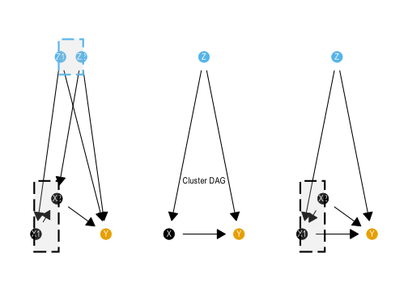
Under this coarsening we see:
Here we see that the only causal degradation is when we coarsen \(\mathcal{G}^{[x]}\). Diving into why we see that it is because the adjustment sets for \(P(Y |\operatorname{do}(Z))\) disagree on what to do with \(X\). In the fine graph \(X_1\) should be excluded from the adjustment set, wheras \(X_2\) should be included as the open path \(Z \rightarrow X_1 \leftarrow X_2 \rightarrow Y\) is open but non-causal. This disagreement cannot be reconciled when we form the cluster \([X]=\{X_1, X_2\}\) in the cluster DAG.
# imports all causal models as DAGitty objects
# They are names dag_s1, ..., dag_s8 corresponding to the eight sessions
# A table of session data is also included
source("load-GCMs.R")# Some colours
# \definecolor{myochre}{RGB}{204,119,34}
# \definecolor{mygum}{RGB}{87,180,66}
myochre <- rgb(204, 119, 34, maxColorValue = 255)
mygum <- rgb(87, 180, 66, maxColorValue = 255)
node_type_colours <- c(
"Assessment data" = "#000000",
"Learning data" = "#999999",
"Help" = "#CC79A7",
"Student" = "#009E73",
"Teacher" = "#E69F00",
"Learning design" = "#56B4E9"
)
wrap_width <- 13
hue1 <- palette.colors(3, palette = "Okabe-Ito")[[2]]
hue2 <- palette.colors(3, palette = "Okabe-Ito")[[3]]Modelling sessions were originally run on Loopy, then transcribed into DAGitty (online) to generate the following dot language syntax for importing into R. A better way of doing this is under development.
Data imported as DAGitty objects, but need to be in tidygraph format for many calculations and visualisations.
Creating a list of all the DAGs in tidy format:
# making list of dagitty dags (used later)
ddags <- list(
"M1" = dag_m1,
"M2" = dag_m2,
"M3" = dag_m3,
"M4" = dag_m4,
"M5" = dag_m5,
"M6" = dag_m6,
"M7" = dag_m7,
"M8" = dag_m8
)
tdags <- list(
"M1" = dag_to_tidy_graph(dag_m1),
"M2" = dag_to_tidy_graph(dag_m2),
"M3" = dag_to_tidy_graph(dag_m3),
"M4" = dag_to_tidy_graph(dag_m4),
"M5" = dag_to_tidy_graph(dag_m5),
"M6" = dag_to_tidy_graph(dag_m6) |>
filter( # this removes feedback link to next learning cycle
!str_detect(name, "Post")),
"M7" = dag_to_tidy_graph(dag_m7),
"M8" = dag_to_tidy_graph(dag_m8))
ddags.raw <- ddags
ddags <-
imap(tdags, \(g, n)
tidy_graph_to_dag(g)) |>
map(\(d) {
dagitty::outcomes(d) <- "Grade"
d}) |>
imap(\(d, n) {
if (n != "M7") {
dagitty::exposures(d) <-
"S.Kn"
} else {
dagitty::exposures(d) <-
c("S.Kn.Coms", "S.Kn.Interp", "S.Kn.Tech")
}
d})
quick_list_of_all_nodes <-
map(tdags, \(g) pull(g, name)) |>
unlist() |>
unique() |>
sort()
rm(dag_m1, dag_m2, dag_m3, dag_m4, dag_m5, dag_m6, dag_m7, dag_m8)Different people used different language to describe their understanding of the system in question. In order to make comparisons we must work out when they are talking about the same thing (in graph terms, the same node) or when they are talking about different things. To complicate things there is also the challenge of hierarchical modelling choices - sometimes people would describe one thing in more detail than others. In graph terms this would mean one model might have “student subject knowledge” (see model 8) whereas another might break this into components (see model 7).
To make meaningful comparisons we must:
Coding the nodes into rough groups. There are two levels:
node_group is the first aggregation into slightly coarser groups of nodes.node_type is an even more coarse grouping into a handful of types.Also some nicer names of the fields: - node_nice_name is a longer more explanatory name for plotting and putting in tables. - node_group_nice_name a longer more explanatory name for node groups, as above.
name_node_nice_name <- tribble(
~name, ~nice_name,
"CD", "Any system data",
"CD.Att", "Attendance",
"CD.LMS", "LMS activity",
"CD.LMS.code", "Code artifacts",
"CD.LMS.write", "Writing artifacts",
"CD.Str", "Course Data",
"Grade", "Assessment grade",
"Grade.Coms", "Mark - Communication",
"Grade.Exam", "Mark - Exam",
"Grade.Interp", "Mark - Interpretation",
"Grade.Proc", "Mark - Learning process",
"Grade.Quiz", "Mark - Quiz",
"Grade.Ref", "Mark - Learning reflection",
"Grade.Tech", "Mark - Technical",
"H", "Help (general)",
"H.AI", "Help from AI (any)",
"H.AI.Agent", "Help from AI (agent)",
"H.AI.evil", "Misuse of AI",
"H.AI.evil.code", "Misuse of AI (code)",
"H.AI.evil.write", "Misuse from AI (write)",
"H.AI.Fb", "Help from AI (feedback)",
"H.AI.good", "Help from AI (to learn)",
"H.AI.Res", "Help from AI (research)",
"H.AI.Study", "Help from AI (revision)",
"H.Ment", "Help from mentor",
"H.other.evil", "Cheating - non-AI",
"H.Peer", "Help from peers",
"H.Tut", "Help from teacher / tutor",
"H.Tut.Fb", "Feedback from teacher / tutor",
"LD", "Learning design",
"LD.Other", "Other learning design",
"LD.AIguide", "Guidance on AI use",
"LD.Task", "Task design",
"LD.Task.Code", "Coding task design",
"LD.Task.Grp", "Groupwork task design",
"LD.Task.Other", "Other task design",
"LD.Task.Prac", "Practical task design",
"LD.Task.Write", "Writing task design",
"S.Act", "Student decisions / actions",
"S.Act.AIstrat", "Student AI strategy",
"S.Act.Fb", "Student acts on feedback",
"S.Act.Fb.Post", "Student acts on feedback between subjects",
"S.Act.Frm", "Student does formative tasks",
"S.Act.Perf", "Student performance on task",
"S.Act.Time", "Student commits time",
"S.Aff.Integ", "Student acting with integrity",
"S.Aff.Joy", "Student enjoyment",
"S.Aff.MindSet", "Student mindset",
"S.Aff.Safe", "Student feels safe",
"S.Aff.WrkLd", "Student workload pressure",
"S.Cp.WrkLd", "Student workload pressure",
"S.Aff.Hsk", "Student help seeker",
"S.Att.Eq", "Student equity group",
"S.Cp.Hsk", "Student help seeker",
"S.Att.Nro", "Student neuro-divergent",
"S.Att.SocCap", "Student social capital",
"S.Kn.Aca", "Student academic skill",
"S.Cp.Aca", "Student academic skill",
"S.Cp.Aca.Post", "Student academic skill: Post grade",
"S.Cp.EvJdg", "Student evaluative judgement",
"S.Cp.Fb", "Student feedback literacy",
"S.Cp.Grp", "Student groupwork capability",
"S.Cp.Ind", "Student individual work capability",
"S.Cp.Lrn", "Student metacognative learning capabilities",
"S.Cp.SRL", "Student SRL",
"S.Kn", "Student subject knowledge",
"S.Kn.Post", "Student subject knowledge: Post grade",
"S.Kn.Coms", "Student communications knowledge",
"S.Kn.Interp", "Student interpretation knowledge",
"S.Kn.Prior", "Student prior knowledge",
"S.Kn.Tech", "Student technical knowledge",
"T.Act.UseAI", "Teacher use of AI",
"T.Aff.Integ", "Teacher acts with integrity",
"T.Aff.WrkLd", "Teacher workload pressure",
"T.Cp.WrkLd", "Teacher workload pressure",
"T.Cp.Inst", "Teacher instruction quality",
"T.Cp.KnStu", "Teacher knows students",
"T.Cp.Mark", "Teacher reliably marks",
"T.Kn.AI", "Teacher AI literacy",
"T.Cp.AI", "Teacher AI expertise",
"T.Kn.Ass", "Teacher assessment literacy",
"T.Kn.Sub", "Teacher subject knowledge",
"T.Cp.Sub", "Teacher subject expertise"
)
node_group_nice_name <- tribble(
~node_group, ~nice_name,
"Assessments", "Preliminary assessments",
"CD.Att", "Student attendance",
"CD.LMS", "LMS activity",
"CD.Str", "Course Data",
"Grade", "Assessment grade",
"H.AI.evil", "Misuse of AI",
"H.AI.good", "Help from AI",
"H.Cheat", "Cheating - non-AI",
"H.Peer", "Help from peers",
"H.Gen", "Help (General)",
"H.Tut", "Help from teacher / tutor",
"LD.Gen", "Learning design",
"LD.Task", "Task design",
"S.Act", "Student decisions / actions",
"S.Att", "Student attributes",
"S.Cp", "Student metacognitive skill",
"S.EM", "Student emotion / motivation",
"S.Kn", "Student knowledge",
"S.Kn.Prior", "Student prior knowledge",
# "T.Act", "Teacher use of AI",
"T.Cp", "Teacher capabilities",
"T.EM", "Teacher emotion / motivation",
"T.Kn", "Teacher knowledge"
)This process involved iterating between:
Student knowledge was a key example of this, where several models split this into finer grained nodes, where others did not.code_node_group <- function(v) {
case_when(
# Course data - Str, LMS --------------
v == "CD" ~ "CD.Str", # was blending LMS and Str, but original graph was more about structure
str_detect(v, "CD\\.LMS") ~ "CD.LMS",
v == "CD.Att" ~ "CD.Att", # Attendance data
v == "CD.Str" ~ "CD.Str",
# Grade data --------------------------
v == "Grade" ~ "Grade",
str_detect(v, "Grade\\.") ~ "Grade", # Assessments
# Kinds of help / assistance -----------------------
# - Help from teacher or tutor
# - - H.Gen(eral) for the broad H category
v == "H" ~ "H.Gen", # This should actually be the node_type...somehow
v == "H.Tut" ~ "H.Tut",
v == "H.Ment" ~ "H.Tut",
v == "H.Tut.Fb" ~ "H.Tut",
# - Help from peers - collapsing with Tut for "help from people" - change from first coding
v == "H.Peer" ~ "H.Tut",
# - Help from AI (good or bad usage)
str_detect(v, "H\\.AI\\.evil") ~ "H.AI.evil",
str_detect(v, "H\\.AI") ~ "H.AI.good",
# - Other nefarious help (i.e. cheating)
v == "H.other.evil" ~ "H.Cheat",
# Learning Design --------------------
str_detect(v, "^LD\\.Task") ~ "LD.Task",
str_detect(v, "^LD") ~ "LD.Gen",
# Student nodes ---------------------------------
# - Student activity / decisions
# - - Action post grade a seperate node
v == "S.Act.Fb.Post" ~ "S.Act.Post",
v == "S.Cp.Aca.Post" ~ "S.Cp.Post",
str_detect(v, "^S\\.Act") ~ "S.Act",
# - Student attributes (generally unchangable)
str_detect(v, "^S\\.Att") ~ "S.Att",
# - Student metacognitive capability (metacognition) / capacity / workload
str_detect(v, "^S\\.Cp") ~ "S.Cp",
# - Student emotion / motivation
str_detect(v, "^S\\.Aff") ~ "S.EM",
# - Student knowledge (cognition)
v == "S.Kn.Prior" ~ "S.Kn.Prior",
v == "S.Kn.Post" ~ "S.Kn.Post",
str_detect(v, "^S\\.Kn") ~ "S.Kn",
# Teacher nodes ---------------------------------
# - Teacher knowledge / meta-cognition: What they bring to the table
str_detect(v, "^T\\.Kn") ~ "T.Kn",
# - Teacher capabilities - usually executed during learning cycle
str_detect(v, "^T\\.Cp") ~ "T.Cp",
# - Teacher emotion / motivation
str_detect(v, "^T\\.Aff") ~ "T.EM",
TRUE ~ v
)
}code_node_type <- function(n) {
fl <- str_extract(n, "^.{1}")
case_when(
fl == "S" ~ "Student",
fl == "T" ~ "Teacher",
fl == "C" ~ "Learning data",
fl == "H" ~ "Help",
fl == "L" ~ "Learning design",
fl == "G" ~ "Assessment data"
) |>
factor(levels = rev(c(
"Learning design",
"Teacher",
"Student",
"Help",
"Learning data",
"Assessment data"
)))
}From the node groups, describe how easy (or not) they are to measure. This is completed by someone familiar to the data warehouse at the institution:
code_node_measurability <- function(node) {
case_when(
# Student
node == "S.Att.SocCap" ~ "PO", # check
node == "S.Att.Nro" ~ "O", # check
node == "S.Att.Eq" ~ "DW", # check
node == "S.Att.HSk" ~ "L", # check
node == "S.Act.AIstrat" ~ "L",
node == "S.Act.Fb" ~ "L",
node == "S.Act.Fb.Post" ~ "L",
str_detect(node, "^S\\.Act") ~ "PO",
str_detect(node, "^S\\.Kn") ~ "PO",
str_detect(node, "^S") ~ "L", # Latent
# Help
node == "H.other.evil" ~ "L",
node == "H.Peer" ~ "L",
node == "H.AI.evil.code" ~ "PO", # Potentially observable
node == "H.AI.evil.write" ~ "PO",
node == "H.AI.evil.write" ~ "PO",
str_detect(node, "^H\\.AI") ~ "PO",
str_detect(node, "^H") ~ "L",
# Assessment
node == "Grade" ~ "DW",
node == "Grade.Exam" ~ "DW",
str_detect(node, "^Grade") ~ "O",
# Learning data
node == "CD.LMS" ~ "DW",
str_detect(node, "^CD\\.LMS") ~ "O",
node == "CD.Att" ~ "PO",
node == "CD.Str" ~ "DW", # check
node == "CD" ~ "O", # check
# Learning design
str_detect(node, "^LD") ~ "PO",
# Teacher
node == "T.Cp.UseAI" ~ "PO",
node == "T.Aff.WrkLd" ~ "PO",
node == "T.Cp.Mark" ~ "PO",
str_detect(node, "^T\\.K") ~ "PO",
str_detect(node, "^T") ~ "L",
node == "Assessments" ~ "DW"
) |>
factor(levels = c("DW", "O", "PO", "L"))
}
coarsen_node_measurability <- function(ng_list) {
# Takes in a list of values of the nodes in a cluster node
case_when(
all(ng_list %in% c("O", "DW")) ~ "Observable",
all(ng_list %in% c("PO")) ~ "Potentially observable",
all(ng_list == "L") ~ "Latent",
all(ng_list %in% c("PO", "L")) ~ "Likely latent",
all(ng_list %in% c("DW","O","PO")) ~ "Likely observable",
TRUE ~ str_c("Some observable (",
sum(ng_list %in% c("O","DW")), " of ",
n(), ")")) |>
factor(levels = c(
"Latent",
"Likely latent",
"Potentially observable",
"Likely observable",
"Observable"))
}
coarsen_node_measurability <- function(ng_list, sep = ";") {
# one character vector of codes per node
codes <- lapply(str_split(ng_list, sep), \(x) {
x <- str_squish(x)
x[nzchar(x)]
})
flat <- unlist(codes, use.names = FALSE)
n_nodes <- length(codes)
n_obs <- sum(vapply(codes, \(x) length(x) > 0 && all(x %in% c("O", "DW")),
logical(1)))
out <- case_when(
n_nodes == 0 ~ NA_character_,
all(flat %in% c("O", "DW")) ~ "Observable",
all(flat == "PO") ~ "Potentially observable",
all(flat == "L") ~ "Latent",
all(flat %in% c("PO", "L")) ~ "Likely latent",
all(flat %in% c("DW", "O", "PO")) ~ "Likely observable",
TRUE ~ str_c("Some observable (", n_obs, " of ", n_nodes, ")")
)
factor(out, levels = unique(c(
"Latent",
"Likely latent",
out, # keeps the dynamic label as a valid level
"Potentially observable",
"Likely observable",
"Observable"
)))
}Functions outlined in the gcm_helpers.R script. Functions starting with gcm_ should operate on either a dagitty or tidygraph object.
Generating a range of edge metrics - comparisons across models. Want to label edges in the unified DAG as ‘contested’ if they switch direction between some models. Also want to examine the same idea for a list of descendants. This is handled as a new table of edges - including all possible edges.
fill_matrix_NAs_with_colmean <- function(m) {
stopifnot(is.matrix(m), is.numeric(m))
cm <- colMeans(m, na.rm = TRUE)
idx <- which(is.na(m), arr.ind = TRUE)
m[idx] <- cm[idx[, "col"]]
m
}########################################################
# graph metric functions ------------
# Not included in graph_helpers as they are less generic
########################################################
gcm_node_metrics <- function(g) {
if (class(g)[[1]] == "dagitty") g <- dagitty_to_tidygraph(g)
pagerank_no_outcome <-
g %N>%
filter(name != "Grade") |>
mutate(pagerank_no_outcome = centrality_pagerank(damping = 0.85)) |>
as_tibble() |>
select(name, pagerank_no_outcome)
g %N>%
mutate(
node_w = 1,
node_group = code_node_group(name),
node_type = code_node_type(name),
measurability = code_node_measurability(name),
degree = centrality_degree(),
btw = centrality_betweenness(),
btw_rank = rank(-btw, ties.method = "min"), # rank (highest = 1)
btw_rel_rank = (btw_rank - 1) / (n() - 1),
btw_rel = 1 - btw_rel_rank,
eigen = centrality_eigen(),
pagerank = centrality_pagerank(damping = 0.5) # lowers the influence of sinks
) |>
as_tibble() |>
left_join(pagerank_no_outcome, by = "name") |>
mutate(pagerank_no_outcome = replace_na(pagerank_no_outcome, 0))
}
gcm_summary_metrics <- function(g){
if (class(g)[[1]] == "dagitty") g <- dag_to_tg(g)
pagerank_no_outcome <-
g %N>%
filter(name != "Grade") |>
mutate(pagerank_no_outcome = centrality_pagerank(damping = 0.5)) |>
as_tibble() |>
select(name, pagerank_no_outcome)
n.df <- g %N>%
mutate(
pgrnk = centrality_pagerank(damping = 0.5),
ng = code_node_group(name),
m = code_node_measurability(name)) |>
as_tibble() |>
left_join(pagerank_no_outcome, by = "name")
# p_traced <- mean(n.df$m == "Traced")
# p_untraced <- mean(n.df$m == "Untraced")
# pgrnk_traced <- sum(n.df |> filter(m == "Traced") |> pull(pgrnk))
# pgrnk_untraced <- sum(n.df |> filter(m == "Untraced") |> pull(pgrnk))
# pgrnk_no_outcome_traced <- sum(n.df |> filter(m == "Traced") |> pull(pagerank_no_outcome))
# pgrnk_no_outcome_untraced <- sum(n.df |> filter(m == "Untraced") |> pull(pagerank_no_outcome))
p_dw <- mean(n.df$m == "DW")
p_o <- mean(n.df$m == "O")
p_po <- mean(n.df$m == "PO")
p_l <- mean(n.df$m == "L")
measure_metric <- (3 * p_dw + 2 * p_o + 1 * p_po ) / 3
graph_metrics <- list(
order = gorder(g), # number of nodes
size = gsize(g), # number of edges
density = edge_density(g),
diameter = diameter(g), # longest shortest path
mean_path = mean_distance(g),
clustering= transitivity(g, type = "global"),
acyclic = igraph::is_acyclic(as.igraph(g)),
measurability = measure_metric,
p_dw = p_dw,
p_o = p_o,
p_po = p_po,
p_l = p_l
)
graph_metrics
}all_nodes <-
imap(tdags, \(g,m) gcm_nodelist(g)) |>
list_rbind(names_to = "Model")
all_edges <-
imap(tdags, \(g, m) gcm_edgelist(g) |> mutate(Model = m)) |>
list_rbind() |>
adorn_switches_exist(from, to) |>
mutate(edge_alignment = if_else(switched, "contested", "aligned"))
all_possible_edges <-
imap(tdags, \(g, m) gcm_possible_edges(g)) |>
list_rbind(names_to = "Model")
max_possible_edges <-
all_possible_edges |>
filter(from != to) |>
count(from, to) |>
rename(max_n = n)
all_descendants <-
imap(tdags, \(g,m) gcm_all_descendants_edge_list(g)) |>
list_rbind(names_to = "Model") |>
adorn_switches_exist(from, to) |>
mutate(descendant_alignment = if_else(switched, "descendant:contested", "descendant:aligned")) |>
select(-switched)
all_possible_edges_with_metrics <-
all_possible_edges |>
filter(from != to) |>
left_join(
all_edges |>
mutate(in_graph = TRUE),
by = c("Model", "from", "to")) |>
mutate(in_graph = replace_na(in_graph, FALSE)) |>
left_join(
all_descendants |>
mutate(descendant_in_graph = TRUE),
by = c("Model", "from", "to")) |>
mutate(descendant_in_graph = replace_na(
descendant_in_graph, FALSE))
all_edges_sum <-
all_possible_edges_with_metrics |>
group_by(from, to) |>
summarise(
n = sum(in_graph),
n_descendant = sum(descendant_in_graph),
N = n(),
direct_alignment = mean(edge_alignment == "aligned", na.rm = T),
descendant_alignment = mean(
descendant_alignment == "descendant:aligned", na.rm = T),
.groups = "drop") |>
mutate(
p_direct = n / N,
p_descendant = n_descendant / N) |>
arrange(desc(n))
all_edges_in_models_with_metrics <-
all_edges_sum |>
filter(n > 0) |>
inner_join(max_possible_edges,
by = c("from", "to")) |>
mutate(
edge_p_w = n / max_n,
edge_dp_w = n_descendant / max_n) |>
mutate(edge_w = n) |>
adorn_switches_exist(from, to)merged_edges <-
all_edges_in_models_with_metrics |>
mutate(path_type = "causal")
merged_nodes <-
all_nodes |>
count(name) |>
rename(node_w = n) |>
mutate(node_group = code_node_group(name)) |>
mutate(node_type = code_node_type(name)) |>
mutate(measurable = code_node_measurability(name)) |>
left_join(name_node_nice_name, by = "name")
merged_all_graph <- tbl_graph(nodes = merged_nodes, edges = merged_edges)This is based on the coding of the nodes into node groups.
Here we merge nodes into node groups before generating plot later. This has the potential to introduce loops depending on how the constructs were built, so we need to check the causal consistency between the fine-grained graph and the clustered / merged / higher-level graph.
clean_node_group_cluster_graph <- function(cdag) {
# After coarsening with code_node_group cleans up some of the
# names and nodes
dag_out <-
cdag |>
activate(edges) |>
mutate(path_type = "causal") |>
activate(nodes) |>
mutate(node_type = code_node_type(name))
if ("measurable" %in% names(cdag |> activate(nodes) |> as_tibble())) {
dag_out <-
dag_out |>
mutate(
measurability_node_group = coarsen_node_measurability(measurable))
}
dag_out |>
select(-any_of(c("nice_name", "node_group"))) |>
left_join(
node_group_nice_name |>
rename(name = node_group),
by = "name")
}
node_group_cluster_graph_from_merged <-
gcm_cluster_graph(merged_all_graph, code_node_group) |>
clean_node_group_cluster_graph()
CDAGs_node_group <-
map(tdags,
\(g)
gcm_cluster_graph(g, code_node_group) |>
clean_node_group_cluster_graph())
node_group_cluster_graph_from_clusters <-
gcm_merge(
gcm_merge(
gcm_merge(CDAGs_node_group[[1]], CDAGs_node_group[[2]]),
gcm_merge(CDAGs_node_group[[3]], CDAGs_node_group[[4]])
),
gcm_merge(
gcm_merge(CDAGs_node_group[[5]], CDAGs_node_group[[6]]),
gcm_merge(CDAGs_node_group[[7]], CDAGs_node_group[[8]])
)
)all_paths_summary <-
imap(ddags, \(d, n) gcm_count_paths(d)) |>
list_rbind(names_to = "Model")
all_paths <-
imap(
ddags,
\(d, n) bind_cols(
tibble(Model = n),
dagitty::paths(d, limit = 5000)) |>
group_by(Model) |>
summarise(
paths = list(paths),
n_paths = n(),
n_open = sum(open),
p_open = mean(open)
))|>
list_rbind()
dag_complexity_metrics <-
imap(tdags, \(g, n) as_tibble(gcm_summary_metrics(g))
) |>
list_rbind(names_to = "Model") |>
inner_join(
imap(
ddags,
\(d, n)
tibble(Model = n) |>
mutate(
n_adj_sets = length(dagitty::adjustmentSets(d)))) |>
list_rbind(),
by = "Model"
) |>
inner_join(all_paths_summary, by = "Model")all_nodes_with_metrics <-
imap(tdags, \(g,n) gcm_node_metrics(g)) |>
list_rbind(names_to = "Model")gcm_metrics <-
inner_join(session_data, dag_complexity_metrics, by = "Model") all_nodes_with_metrics |>
count(node_type) |>
arrange(node_type) |>
knitr::kable(caption = "Counts of the nodes according to type")| node_type | n |
|---|---|
| Assessment data | 15 |
| Learning data | 14 |
| Help | 31 |
| Student | 43 |
| Teacher | 9 |
| Learning design | 11 |
# denser option - radial arc bars for observable
library(scales)
library(ggforce)
library(patchwork)
library(cowplot)
# Main plot - hide all legends
p_validity_and_time <- gcm_metrics |>
mutate(
x_duration = as.numeric(Modelling.duration, units = "minutes"),
y_validity = GCM.validity
) |>
mutate(acyclic = if_else(acyclic, "Yes", "No")) |>
ggplot(aes(
color = acyclic,
size = n_adj_sets
)) +
geom_point(aes(
x = x_duration,
y = y_validity)) +
scale_y_continuous(
limits = c(1, 4.05),
breaks = c(1, 2, 3, 4),
labels = c("Trivially", "Simply", "Adequately", "Well"),
name = "Representation of GCM") +
scale_x_continuous(
limits = c(33, 52), # was 55 to Keep original limits for the data
breaks = c(35, 40, 45,50),
name = "Time spent constructing model (minutes)") +
scale_size(range = c(2, 7),
breaks = range(gcm_metrics$n_adj_sets),
name = "Adjustment\nsets (count)") +
scale_color_manual(values = c(hue1, hue2), name = "Acyclic?") +
scale_fill_manual(values = c(hue1, hue2), guide = "none") +
theme_minimal() +
# coord_fixed(ratio = 2
# # , clip = "off"
# ) +
theme(
legend.position = "left", # Hide legends from main plot
# panel.grid.major.x = element_blank(), # Remove vertical gridlines
panel.grid.minor = element_blank(),
plot.margin = margin(10, 10, 10, 10)
)
p_visibility <- gcm_metrics |>
mutate(
cp_dw = p_dw,
cp_o = p_dw + p_o,
cp_po = p_dw + p_o + p_po,
cp_l = p_dw + p_o + p_po + p_l # should equal 1
) |>
mutate(GCM.validity = case_when(
GCM.validity == 3 & acyclic ~ GCM.validity - 0.03,
GCM.validity == 3 & !acyclic ~ GCM.validity + 0.03,
GCM.validity == 2.5 & acyclic ~ GCM.validity - 0.03,
GCM.validity == 2.5 & !acyclic ~ GCM.validity + 0.03,
TRUE ~ GCM.validity
)) |>
pivot_longer(c(starts_with("cp_"), starts_with("p_")), names_to = "node_vis", values_to = "proportion") |>
mutate(node_visibility = case_when(
str_detect(node_vis, "p_dw") ~ "Data Warehouse",
str_detect(node_vis, "p_o") ~ "Observable",
str_detect(node_vis, "p_po") ~ "Potentially observable",
str_detect(node_vis, "p_l") ~ "Latent"
) |>
ordered(levels = c(
"Latent",
"Potentially observable",
"Observable",
"Data Warehouse"
))) |>
mutate(prop_type = if_else(str_detect(node_vis, "^cp_"), "cp", "p")) |>
pivot_wider(names_from = prop_type, values_from = proportion, id_cols = c(Model,acyclic, GCM.validity, node_visibility)) |>
mutate(acyclic = if_else(acyclic, "Yes", "No")) |>
ggplot(aes(
color = acyclic
)) +
geom_rect(aes(
xmin = cp - p,
xmax = cp,
ymin = GCM.validity - 0.03,
ymax = GCM.validity + 0.03,
fill = acyclic,
alpha = node_visibility),
color = "white") +
scale_y_continuous(
limits = c(1, 4.05),
breaks = c(1, 2, 3, 4),
labels = c("Trivially", "Simply", "Adequately", "Well"),
name = "Representation of GCM",
position = "right") +
scale_alpha_discrete(name = "Data visibility") +
scale_fill_manual(values = c(hue1, hue2), guide = "none") +
theme_minimal() +
# coord_fixed(ratio = 0.15
# # , clip = "off"
# ) +
xlab("Proportion of nodes") +
theme(
legend.position = "right", # Hide legends from main plot
# panel.grid.major.x = element_blank(), # Remove vertical gridlines
panel.grid.minor = element_blank(),
plot.margin = margin(10, 10, 10, 10),
axis.title.y = element_blank(),
axis.text.y = element_blank()
)
p_time_and_representation_1 <- p_validity_and_time + p_visibility
p_time_and_representation_1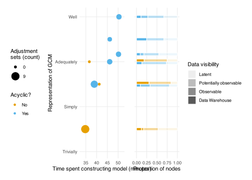
ggsave("figures/FIG--time-modelling-and-representation.jpg",
plot = p_time_and_representation_1,
width = 10, height = 5,
dpi = 300)As a table:
gcm_metrics |>
mutate(acyclic = if_else(acyclic, "Yes, DAG", "No, contained cycles")) |>
arrange(desc(Modelling.duration)) |>
select(Modelling.duration, GCM.validity, acyclic, n_adj_sets, p_dw, p_o, p_po, p_l) |>
knitr::kable(caption = "GCM session metrics")| Modelling.duration | GCM.validity | acyclic | n_adj_sets | p_dw | p_o | p_po | p_l |
|---|---|---|---|---|---|---|---|
| 50M 23S | 4.000 | Yes, DAG | 2 | 0.1111111 | 0.1666667 | 0.3888889 | 0.3333333 |
| 50M 10S | 3.167 | Yes, DAG | 2 | 0.0909091 | 0.0909091 | 0.3636364 | 0.4545455 |
| 46M 6S | 3.500 | Yes, DAG | 1 | 0.2500000 | 0.0000000 | 0.4166667 | 0.3333333 |
| 46M 4S | 3.000 | Yes, DAG | 2 | 0.1333333 | 0.0000000 | 0.6000000 | 0.2666667 |
| 41M 13S | 2.500 | No, contained cycles | 0 | 0.3076923 | 0.0000000 | 0.5384615 | 0.1538462 |
| 38M 55S | 2.500 | Yes, DAG | 6 | 0.0952381 | 0.2380952 | 0.4761905 | 0.1904762 |
| 36M 37S | 3.000 | No, contained cycles | 0 | 0.1875000 | 0.0000000 | 0.5625000 | 0.2500000 |
| 34M 43S | 1.500 | No, contained cycles | 9 | 0.1176471 | 0.0588235 | 0.3529412 | 0.4705882 |
merged_all_graph_layout <- create_layout(
merged_all_graph %E>%
mutate(switched = if_else(
switched, "contested", "alligned")), # needs switched boolean
layout = "sugiyama")
merged_all_graph_layout_adjusted <-
merged_all_graph_layout |>
mutate(
# x = if_else(name == "S.Post.Fb",x + 20,x),
y = if_else(name == "S.Act.Fb.Post",y + 4,y)
) |>
mutate(
x = if_else(name == "S.Act",x + 20,x),
y = if_else(name == "S.Act",y - 4,y)
)
plot_fine_graph_from_layout <- function(lyt, weight_nodes = TRUE) {
ppp <-
lyt |>
ggraph()
if (weight_nodes) {
pp <- ppp +
geom_node_point(aes(colour = node_type,
size = node_w)) +
scale_size(name = "point-size") +
geom_edge_fan(aes(
alpha = edge_p_w * edge_w + edge_w,
edge_linetype = factor(switched)),
strength = 0.2,
arrow = arrow(length = unit(1, 'mm'),
type = "closed"),
start_cap = circle(3, 'mm'),
end_cap = circle(3, 'mm'))
} else {
pp <- ppp +
geom_node_point(aes(colour = node_type)) +
geom_edge_fan(strength = 0.2, alpha = 0.5,
arrow = arrow(length = unit(1, 'mm'),
type = "closed"),
start_cap = circle(1, 'mm'),
end_cap = circle(1, 'mm'))
}
pp +
scale_colour_manual(
values = node_type_colours,
limits = names(node_type_colours),
drop = FALSE
) +
theme_graph() +
scale_edge_alpha_continuous(range = c(0.15,0.8)) +
scale_alpha_continuous(range = c(0.3,1)) +
theme(legend.position = "none",
plot.margin = margin(t = 0, r = 0, b = 0, l = 0, unit = "pt")) +
scale_x_continuous(expand = expansion(mult = 0.1))
}
g_plot_fine <- function(g,
lyt = merged_all_graph_layout_adjusted,
weight_nodes = TRUE) {
create_layout(g, layout = "sugiyama") |>
left_join(
lyt |>
select(x,y,name,node_group,node_type,node_w),
by = "name",
suffix = c(".default", "")) |>
plot_fine_graph_from_layout(weight_nodes = weight_nodes)
}
pMergedFineLegendTall <- merged_all_graph_layout_adjusted |>
g_plot_fine() +
theme(legend.position = "right") +
guides(size = "none", alpha = "none", edge_alpha = "none", edge_width = "none",
color = guide_legend(ncol = 2)) +
theme(legend.title = element_blank())
leg_tall <- cowplot::get_legend(pMergedFineLegendTall)
leg_tall_plot <- cowplot::ggdraw(leg_tall)set.seed(1)
merged_coarse_layout <-
merged_all_graph |>
gcm_cluster_graph(code_node_group) |>
clean_node_group_cluster_graph() |>
activate(edges) |>
mutate(path_type = "causal") |>
create_layout(layout = "sugiyama") |>
mutate(
x = case_when(
name == "CD.Str" ~ 28,
name == "CD.Att" ~ 28,
name == "CD.LMS" ~ 28,
name == "S.Att" ~ x - 3,
name == "S.Act" ~ x - 0.4,
name == "S.Cp" ~ x - 2,
name == "T.Cp" ~ 30,
name == "S.EM" ~ x + 3,
name == "T.EM" ~ 30,
name == "T.Kn" ~ 31,
name == "LD.Task" ~ 31.0,
name == "LD.Gen" ~ 31,
name == "H.Tut" ~ x,
name == "H.AI.evil" ~ 39,
name == "H.AI.good" ~ x - 2,
name == "H.Gen" ~ 39,
name == "H.Cheat" ~ 38,
name == "S.Kn.Prior" ~ x + 20,
# name == "T.Aff.WrkLd" ~ x - 5,
# name == "H.AI.good" ~ 27,
TRUE ~ x),
y = case_when(
name == "S.Kn" ~ y + 1,
# name == "CD.Att" ~ y + 1,
# name == "Grade" ~ y - 2.5,
name == "CD.Str" ~ 9,
name == "CD.Att" ~ 7,
name == "CD.LMS" ~ 4,
name == "LD.Task" ~ y +2.5,
name == "H.Gen" ~ y + 5,
name == "S.Cp" ~ y + 0.5,
name == "T.Cp" ~ 4.5,
name == "T.Kn" ~ y - 2,
name == "H.Tut" ~ y - 1,
name == "H.AI.good" ~ y - 0.8,
name == "H.AI.evil" ~ y - 2.5,
name == "H.Cheat" ~ y,
# name == "S.EM" ~ 5,
TRUE ~ y)
)
plot_coarse_graph_from_layout <- function(lyt) {
nodes <- get_nodes()(lyt)
causal_edges <- filter(get_edges()(lyt),
path_type == "causal") |>
select(from, to, edge_w, path_type) |>
mutate(edge_w = 6 * edge_w)
confound_edges <- filter(get_edges()(lyt),
path_type == "confound") |>
mutate(edge = if_else(from > to,
str_c(to, "--", from),
str_c(from, "--", to))) |>
group_by(edge, path_type) |>
summarise(
from = min(from),
to = max(to),
edge_w = sum(edge_w),
.groups = "drop"
) |>
select(from, to, edge_w, path_type)
tbl_graph(
nodes = nodes,
edges = bind_rows(causal_edges, confound_edges),
directed = TRUE) |>
ggraph(layout = "manual", x = x, y = y) +
geom_edge_fan(
aes(alpha = edge_w, filter = path_type == "causal"),
strength = 0.7, linetype = 1,
arrow = arrow(length = unit(2.5, 'mm')),
start_cap = circle(3, 'mm'),
end_cap = circle(3, 'mm')) +
geom_edge_arc(
aes(alpha = edge_w, filter = path_type == "confound"),
linetype = 2,
strength = -0.1,
start_cap = circle(3, 'mm'),
end_cap = circle(3, 'mm')) +
geom_node_point(aes(colour = node_type
# , size = node_w
)) +
scale_colour_manual(
values = node_type_colours,
limits = names(node_type_colours),
drop = FALSE
) +
theme_graph() +
scale_edge_alpha_continuous(range = c(0.1,0.95)) +
scale_x_continuous(expand = expansion(mult = 0.1)) +
# scale_alpha_continuous(range = c(0.2,0.6)) +
theme(legend.position = "none")
}
g_plot_coarse <- function(g, lyt = merged_coarse_layout,
label = FALSE) {
edge_attr <- g |>
activate(edges) |>
as_tibble() |>
names()
if (!("path_type" %in% edge_attr)) {
g <- g |>
activate(edges) |>
mutate(path_type = "causal")
}
if (!("edge_w" %in% edge_attr)) {
g <- g |>
activate(edges) |>
mutate(edge_w = 1)
}
if (is.null(lyt)) {
p <- create_layout(g, layout = "sugiyama") |>
plot_coarse_graph_from_layout()
} else {
p <- create_layout(g, layout = "sugiyama") |>
left_join(
lyt |>
select(x,y,
name, nice_name,
node_type,node_w),
by = "name",
suffix = c(".default", "")) |>
plot_coarse_graph_from_layout()
}
if (label) {
p <- p +
geom_node_text(aes(
label = str_wrap(nice_name, width = wrap_width)),
nudge_y = -0.5, alpha = 0.5)
}
return(p)
}
pCoarseMerged <- merged_coarse_layout |>
plot_coarse_graph_from_layout() +
geom_node_text(aes(label = name))
pCoarseMerged
# ggsave("dag_merged_course.svg", pCoarseMerged, , width = 6, height = 6)plot_highlighted_fine_graph <- function(model = 1, LEGEND_POSITION = "none") {
MODEL <- paste0("M", model)
nodes_in_graph <- all_nodes |>
filter(Model == MODEL) |>
pull(name)
edges_in_graph <- all_edges |>
filter(Model == MODEL) |>
select(from, to)
edges_in_graph_indexed <-
edges_in_graph |>
mutate(
from = match(from, merged_all_graph %N>% as_tibble() |> pull(name)),
to = match(to, merged_all_graph %N>% as_tibble() |> pull(name))
)
g_highlight <- merged_all_graph %N>%
mutate(
node_highlight = if_else(
name %in% nodes_in_graph, 2, 1
)) %E>%
left_join(
edges_in_graph_indexed |>
mutate(edge_highlight = 2),
by = c("from", "to")
) |>
mutate(edge_highlight = replace_na(edge_highlight, 1)) |>
create_layout("sugiyama")
g_highlight |>
ggraph() +
geom_edge_fan(aes(
# edge_linetype = factor(switched),
alpha = edge_highlight),
strength = 0.2,
arrow = arrow(length = unit(1, 'mm'),
type = "closed"),
start_cap = circle(3, 'mm'),
end_cap = circle(3, 'mm')) +
geom_node_label(
aes(label = str_wrap(nice_name, width = wrap_width),
color = node_type,
size = node_w),
alpha = 0.7,
data = g_highlight |>
filter(node_highlight == 2),
repel = T, max.overlaps = 30,
show.legend = FALSE) +
geom_node_point(aes(colour = node_type,
size = node_w,
alpha = node_highlight)) +
scale_size(name = "point-size", range = c(2,3)) +
scale_colour_manual(
values = node_type_colours,
limits = names(node_type_colours),
drop = FALSE
) +
theme_graph() +
scale_edge_alpha_continuous(range = c(0.08,0.8)) +
scale_alpha_continuous(range = c(0.1,1.0)) +
# theme(legend.position = "none",
# plot.margin = margin(t = 0, r = 0, b = 0, l = 0, unit = "pt")) +
theme(legend.position = LEGEND_POSITION) +
guides(size = "none", edge_width = "none", alpha = "none", edge_alpha = "none",
color = guide_legend(ncol = 1)) +
theme(legend.title = element_blank())
}
merged_cluster_graph_ng_no_post_nodes <-
merged_all_graph |>
activate(nodes) |>
filter(!str_detect(name, "Post")) |>
gcm_cluster_graph(code_node_group) |>
clean_node_group_cluster_graph() |>
mutate(node_group = name) |>
activate(nodes) |>
left_join(merged_coarse_layout |> select(name, x, y), by = "name")
plot_highlighted_coarse_graph <- function(model = 1, LEGEND_POSITION = "none",
repel_labels = TRUE) {
merged_coarse_models <-
merged_cluster_graph_ng_no_post_nodes
MODEL <- paste0("M", model)
node_groups_in_graph <- all_nodes |>
filter(Model == MODEL) |>
mutate(name = code_node_group(name)) |>
distinct(name) |>
pull(name)
edges_in_coarse_graph <- all_edges |>
filter(Model == MODEL) |>
select(from, to) |>
mutate(across(from:to, code_node_group))
edges_in_graph_indexed <-
edges_in_coarse_graph |>
mutate(
from = match(from,
merged_coarse_models |>
as_tibble() |>
pull(name)),
to = match(to,
merged_coarse_models %N>%
as_tibble() |>
pull(name))
)
edge_integers <-
edges_in_graph_indexed |>
mutate(p2p3 = (2 ** from) * (3 ** to) ) |>
pull(p2p3)
g_highlight <-
merged_coarse_models %N>%
mutate(
node_highlight = if_else(
name %in% node_groups_in_graph, 1.0, 0.1
)) %E>%
mutate(
edge_highlight = if_else(
((2 ** from) * (3 ** to)) %in% edge_integers,
1.0, 0.1
)
)
g_highlight |>
ggraph(layout = "manual",
x = g_highlight %N>% pull(x),
y = g_highlight %N>% pull(y)
) +
geom_edge_fan(aes(
# edge_linetype = factor(switched),
alpha = edge_highlight),
strength = 0.2,
arrow = arrow(length = unit(1, 'mm'),
type = "closed"),
start_cap = circle(3, 'mm'),
end_cap = circle(3, 'mm')) +
geom_node_point(aes(colour = node_type,
size = node_w,
alpha = node_highlight)) +
geom_node_text(
aes(label = str_wrap(nice_name, width = wrap_width),
color = node_type,
alpha = node_highlight,
size = node_w
),
repel = repel_labels,
max.overlaps = 30,
show.legend = FALSE) +
scale_size(name = "point-size", range = c(2,3)) +
# scale_color_npg() +
scale_colour_manual(
values = node_type_colours,
limits = names(node_type_colours),
drop = FALSE
)+
theme_graph() +
scale_edge_alpha_identity() +
scale_alpha_identity() +
# theme(legend.position = "none",
# plot.margin = margin(t = 0, r = 0, b = 0, l = 0, unit = "pt")) +
theme(legend.position = LEGEND_POSITION) +
guides(size = "none", edge_width = "none", alpha = "none", edge_alpha = "none",
label = "none",
color = guide_legend(ncol = 1)) +
theme(legend.title = element_blank())
}# Model used in paper
md_for_paper <- 5
p_merged_highlighted_fine <- plot_highlighted_fine_graph(
md_for_paper,
LEGEND_POSITION = "right")
p_merged_highlighted_coarse <- plot_highlighted_coarse_graph(
md_for_paper, LEGEND_POSITION = "right")
p_merged_highlighted_fine + ggtitle(str_c("Model ",md_for_paper , ", original"))
p_merged_highlighted_coarse + ggtitle(str_c("Model ",md_for_paper , ", coarsened")) 
# ggsave(plot = p_merged_highlighted_fine,
# filename = "figures/FIG--merged-fine-with-1-highlighted.jpg",
# width = 8, height = 5, dpi = 600)
#
# ggsave(plot = p_merged_highlighted_coarse,
# filename = "figures/FIG--merged-coarse-with-1-highlighted.jpg",
# width = 8, height = 5, dpi = 600)# Generating all
p_fine_show_and_save <- function(n){
p_temp <- plot_highlighted_fine_graph(n, LEGEND_POSITION = "right") + ggtitle(paste0("DAG ", n, " highlighted"))
ggsave(plot = p_temp,
filename = paste0("figures/plt--merged-fine-with-", n, "-highlighted.png"),
width = 8, height = 5, dpi = 600)
return(p_temp)
}
p_coarse_show_and_save <- function(n){
p_temp <- plot_highlighted_coarse_graph(n, LEGEND_POSITION = "right") + ggtitle(paste0("CDAG ", n, " highlighted"))
ggsave(plot = p_temp,
filename = paste0("figures/plt--merged-coarse-with-", n, "-highlighted.png"),
width = 8, height = 5, dpi = 600)
return(p_temp)
}Note the appearance of feedback loops - these are between S.Cp and S.Kn, but also S.Cp and H.AI.evil. These metacognitive skills are clearly seen as important feedback processes in this system.
Most common node group patterns - nodes in at least half the models, then looking at the resulting graph of node-groups.
node_list_majority_of_models <-
all_nodes |>
count(name) |>
filter(n >= 4) |>
pull(name)
coarse_filtered_graph_temp <-
merged_all_graph |>
activate("nodes") |>
filter(name %in% node_list_majority_of_models)
coarse_filtered_graph <-
coarse_filtered_graph_temp |>
gcm_cluster_graph(code_node_group)Weighting by num of models instead This one uses only nodes that are in the majority of models, then coarsens the graph, then aggregates edges based on the number of models that they appear in. The edges must also appear in at least 2 models
node_list_majority_of_models <-
all_nodes |>
count(name) |>
filter(n >= 4) |>
pull(name)
coarse_filtered_graph_ng_filled <-
tbl_graph( # only nodes that are in most models (4 or more)
nodes = all_nodes |>
filter(name %in% node_list_majority_of_models) |>
mutate( # but then coarsen into node groups
node_group = code_node_group(name),
node_type = code_node_type(name)) |>
count(node_group, node_type) |>
rename(node_w = n),
edges = all_edges |> # Only edges between node groups...
mutate(across(from:to, code_node_group)) |>
distinct(Model, from, to) |>
count(from, to) |>
# filter(n > 1) |> # ...that occur in at least two models
filter(from %in% code_node_group(node_list_majority_of_models)) |>
filter(to %in% code_node_group(node_list_majority_of_models)) |>
rename(edge_w = n)) |>
activate("edges") |>
adorn_switches_exist(from, to) |>
activate("nodes") |>
inner_join(node_group_nice_name)All edges between node groups from the majority nodes
lyt_coarse_filtered_ng_full <- create_layout(
coarse_filtered_graph_ng_filled,
layout = "sugiyama")
p_top_node_groups_full <- ggraph(lyt_coarse_filtered_ng_full) +
geom_edge_fan(aes(edge_linetype = factor(switched), alpha = edge_w),
strength = 0.8,
arrow = arrow(length = unit(2, 'mm'), type = "closed"),
start_cap = circle(3, 'mm'),
end_cap = circle(3, 'mm')) +
geom_node_point(aes(colour = node_type, size = node_w)) +
scale_colour_manual(
values = node_type_colours,
limits = names(node_type_colours),
drop = FALSE
) +
theme_graph() +
scale_edge_alpha_continuous(range = c(0.15,0.8)) +
scale_alpha_continuous(range = c(0.2,0.9)) +
theme(legend.position = "none") +
scale_size(range = c(3,6)) +
geom_node_text(aes(label = str_wrap(nice_name, width = wrap_width), colour = node_type),
alpha = 0.9,
nudge_y = -.3,
repel = F) +
xlim(c(
min(lyt_coarse_filtered_ng_full$x) - 0.15,
max(lyt_coarse_filtered_ng_full$x) + 0.15))
p_top_node_groups_full
ggsave("figures/FIG--consensus-sub-model-full.jpg",
p_top_node_groups_full,
dpi = 900,
height = 4, width = 6)Filtered - edges must be in at least 2 models
lyt_coarse_filtered_ng_filtered <-
create_layout(
coarse_filtered_graph_ng_filled |>
activate("edges") |>
filter(edge_w > 1) |>
mutate(
switched = map_lgl(row_number(), function(i) {
from_i <- .E()$from[i]
to_i <- .E()$to[i]
any(from == to_i & to == from_i)
})
) ,
layout = "sugiyama") |>
select(-x, -y) |>
inner_join(lyt_coarse_filtered_ng_full |> select(x, y, node_group, node_type))
p_top_node_groups_filtered <-
ggraph(lyt_coarse_filtered_ng_filtered) +
geom_edge_fan(aes(edge_linetype = factor(switched), alpha = edge_w, ), # alpha = edge_w,
strength = 0.8,
arrow = arrow(length = unit(2, 'mm'), type = "closed"),
start_cap = circle(3, 'mm'),
end_cap = circle(3, 'mm')) +
geom_node_point(aes(colour = node_type, size = node_w)) +
scale_colour_manual(
values = node_type_colours,
limits = names(node_type_colours),
drop = FALSE
) +
theme_graph() +
scale_edge_alpha_continuous(range = c(0.15,0.8)) +
scale_alpha_continuous(range = c(0.2,0.9)) +
theme(legend.position = "none") +
scale_size(range = c(3,6)) +
geom_node_text(aes(label = str_wrap(nice_name, width = wrap_width), colour = node_type),
alpha = 0.9, nudge_y = -.3, repel = F) +
xlim(c(min(lyt_coarse_filtered_ng_filtered$x) - 0.15, max(lyt_coarse_filtered_ng_filtered$x) + 0.15))
p_top_node_groups_filtered
ggsave("figures/FIG--consensus-sub-model-filtered.jpg",
p_top_node_groups_filtered,
dpi = 900,
height = 4, width = 6)# all nodes
all_nodes_with_metrics |>
inner_join(name_node_nice_name) |>
inner_join(node_group_nice_name |> rename(g_nice_name = nice_name)) |>
select(name, nice_name, g_nice_name, node_group, Model, pagerank_no_outcome, pagerank, btw_rel_rank) |>
arrange(name, Model) |>
knitr::kable()| name | nice_name | g_nice_name | node_group | Model | pagerank_no_outcome | pagerank | btw_rel_rank |
|---|---|---|---|---|---|---|---|
| CD | Any system data | Course Data | CD.Str | M1 | 0.2598017 | 0.1254606 | 0.5000000 |
| CD.Att | Attendance | Student attendance | CD.Att | M4 | 0.0235946 | 0.0410063 | 0.5625000 |
| CD.Att | Attendance | Student attendance | CD.Att | M7 | 0.0348776 | 0.0360250 | 0.6500000 |
| CD.LMS | LMS activity | LMS activity | CD.LMS | M2 | 0.0489246 | 0.0601186 | 0.7272727 |
| CD.LMS | LMS activity | LMS activity | CD.LMS | M3 | 0.1242479 | 0.0777349 | 0.4000000 |
| CD.LMS | LMS activity | LMS activity | CD.LMS | M4 | 0.1146045 | 0.0678438 | 0.5625000 |
| CD.LMS | LMS activity | LMS activity | CD.LMS | M6 | 0.0679850 | 0.0647762 | 0.6666667 |
| CD.LMS | LMS activity | LMS activity | CD.LMS | M7 | 0.0403759 | 0.0398677 | 0.6500000 |
| CD.LMS | LMS activity | LMS activity | CD.LMS | M8 | 0.0576999 | 0.0576577 | 0.1428571 |
| CD.LMS.code | Code artifacts | LMS activity | CD.LMS | M7 | 0.0415103 | 0.0399127 | 0.6500000 |
| CD.LMS.write | Writing artifacts | LMS activity | CD.LMS | M7 | 0.0752913 | 0.0477832 | 0.6500000 |
| CD.Str | Course Data | Course Data | CD.Str | M2 | 0.0693898 | 0.0754642 | 0.7272727 |
| CD.Str | Course Data | Course Data | CD.Str | M3 | 0.0569482 | 0.0657501 | 0.4000000 |
| CD.Str | Course Data | Course Data | CD.Str | M6 | 0.0303390 | 0.0470410 | 0.6666667 |
| Grade | Assessment grade | Assessment grade | Grade | M1 | 0.0000000 | 0.1323841 | 0.5000000 |
| Grade | Assessment grade | Assessment grade | Grade | M2 | 0.0000000 | 0.1642797 | 0.7272727 |
| Grade | Assessment grade | Assessment grade | Grade | M3 | 0.0000000 | 0.0732885 | 0.4000000 |
| Grade | Assessment grade | Assessment grade | Grade | M4 | 0.0000000 | 0.0861895 | 0.5625000 |
| Grade | Assessment grade | Assessment grade | Grade | M5 | 0.0000000 | 0.1730290 | 0.5294118 |
| Grade | Assessment grade | Assessment grade | Grade | M6 | 0.0000000 | 0.1582891 | 0.6666667 |
| Grade | Assessment grade | Assessment grade | Grade | M7 | 0.0000000 | 0.1275476 | 0.6500000 |
| Grade | Assessment grade | Assessment grade | Grade | M8 | 0.0000000 | 0.1531532 | 0.7142857 |
| Grade.Coms | Mark - Communication | Assessment grade | Grade | M7 | 0.0562769 | 0.0477944 | 0.5500000 |
| Grade.Exam | Mark - Exam | Assessment grade | Grade | M5 | 0.1621565 | 0.0893094 | 0.2941176 |
| Grade.Interp | Mark - Interpretation | Assessment grade | Grade | M7 | 0.1158678 | 0.0708185 | 0.5500000 |
| Grade.Proc | Mark - Learning process | Assessment grade | Grade | M5 | 0.0762812 | 0.0573829 | 0.3529412 |
| Grade.Quiz | Mark - Quiz | Assessment grade | Grade | M5 | 0.0520260 | 0.0453547 | 0.4117647 |
| Grade.Ref | Mark - Learning reflection | Assessment grade | Grade | M5 | 0.1193653 | 0.0888427 | 0.2352941 |
| Grade.Tech | Mark - Technical | Assessment grade | Grade | M7 | 0.0681343 | 0.0531444 | 0.4500000 |
| H | Help (general) | Help (General) | H.Gen | M1 | 0.0534232 | 0.0643216 | 0.3000000 |
| H | Help (general) | Help (General) | H.Gen | M6 | 0.0764032 | 0.0793816 | 0.4166667 |
| H | Help (general) | Help (General) | H.Gen | M8 | 0.0709553 | 0.0672673 | 0.0000000 |
| H.AI | Help from AI (any) | Help from AI | H.AI.good | M3 | 0.0202678 | 0.0380242 | 0.4000000 |
| H.AI.Agent | Help from AI (agent) | Help from AI | H.AI.good | M5 | 0.0293150 | 0.0325841 | 0.5294118 |
| H.AI.Agent | Help from AI (agent) | Help from AI | H.AI.good | M8 | 0.0311891 | 0.0384384 | 0.7142857 |
| H.AI.Fb | Help from AI (feedback) | Help from AI | H.AI.good | M5 | 0.0293150 | 0.0325841 | 0.5294118 |
| H.AI.Fb | Help from AI (feedback) | Help from AI | H.AI.good | M7 | 0.0367908 | 0.0366855 | 0.1500000 |
| H.AI.Res | Help from AI (research) | Help from AI | H.AI.good | M5 | 0.0293150 | 0.0325841 | 0.5294118 |
| H.AI.Study | Help from AI (revision) | Help from AI | H.AI.good | M5 | 0.0293150 | 0.0325841 | 0.5294118 |
| H.AI.Study | Help from AI (revision) | Help from AI | H.AI.good | M7 | 0.0367908 | 0.0366855 | 0.4000000 |
| H.AI.evil | Misuse of AI | Misuse of AI | H.AI.evil | M2 | 0.2333173 | 0.0929255 | 0.6363636 |
| H.AI.evil | Misuse of AI | Misuse of AI | H.AI.evil | M4 | 0.0314084 | 0.0497933 | 0.5000000 |
| H.AI.evil | Misuse of AI | Misuse of AI | H.AI.evil | M5 | 0.0293150 | 0.0325841 | 0.5294118 |
| H.AI.evil | Misuse of AI | Misuse of AI | H.AI.evil | M6 | 0.1210500 | 0.0841711 | 0.5833333 |
| H.AI.evil | Misuse of AI | Misuse of AI | H.AI.evil | M8 | 0.0311891 | 0.0384384 | 0.7142857 |
| H.AI.evil.code | Misuse of AI (code) | Misuse of AI | H.AI.evil | M7 | 0.0367908 | 0.0366855 | 0.1000000 |
| H.AI.evil.write | Misuse from AI (write) | Misuse of AI | H.AI.evil | M7 | 0.0367908 | 0.0366855 | 0.0500000 |
| H.AI.good | Help from AI (to learn) | Help from AI | H.AI.good | M2 | 0.0477452 | 0.0595770 | 0.2727273 |
| H.AI.good | Help from AI (to learn) | Help from AI | H.AI.good | M4 | 0.0235946 | 0.0410063 | 0.1875000 |
| H.AI.good | Help from AI (to learn) | Help from AI | H.AI.good | M6 | 0.0885786 | 0.0709408 | 0.2500000 |
| H.Ment | Help from mentor | Help from teacher / tutor | H.Tut | M5 | 0.0293150 | 0.0325841 | 0.5294118 |
| H.Peer | Help from peers | Help from teacher / tutor | H.Tut | M2 | 0.0477452 | 0.0595770 | 0.4545455 |
| H.Peer | Help from peers | Help from teacher / tutor | H.Tut | M3 | 0.0202678 | 0.0380242 | 0.4000000 |
| H.Peer | Help from peers | Help from teacher / tutor | H.Tut | M4 | 0.0284131 | 0.0453998 | 0.3125000 |
| H.Tut | Help from teacher / tutor | Help from teacher / tutor | H.Tut | M3 | 0.2051369 | 0.0891319 | 0.1333333 |
| H.Tut | Help from teacher / tutor | Help from teacher / tutor | H.Tut | M4 | 0.0284131 | 0.0453998 | 0.3750000 |
| H.Tut | Help from teacher / tutor | Help from teacher / tutor | H.Tut | M5 | 0.0293150 | 0.0325841 | 0.5294118 |
| H.Tut | Help from teacher / tutor | Help from teacher / tutor | H.Tut | M8 | 0.0311891 | 0.0384384 | 0.7142857 |
| H.Tut.Fb | Feedback from teacher / tutor | Help from teacher / tutor | H.Tut | M2 | 0.0489246 | 0.0601186 | 0.3636364 |
| H.other.evil | Cheating - non-AI | Cheating - non-AI | H.Cheat | M7 | 0.0458741 | 0.0437103 | 0.2000000 |
| LD | Learning design | Learning design | LD.Gen | M2 | 0.0408079 | 0.0541609 | 0.7272727 |
| LD.AIguide | Guidance on AI use | Learning design | LD.Gen | M6 | 0.0303390 | 0.0470410 | 0.6666667 |
| LD.Other | Other learning design | Learning design | LD.Gen | M8 | 0.0311891 | 0.0384384 | 0.7142857 |
| LD.Task | Task design | Task design | LD.Task | M1 | 0.1516042 | 0.1313233 | 0.0000000 |
| LD.Task | Task design | Task design | LD.Task | M3 | 0.0863070 | 0.1109038 | 0.0666667 |
| LD.Task | Task design | Task design | LD.Task | M6 | 0.0561272 | 0.0705615 | 0.1666667 |
| LD.Task | Task design | Task design | LD.Task | M8 | 0.0444445 | 0.0480480 | 0.2857143 |
| LD.Task.Code | Coding task design | Task design | LD.Task | M8 | 0.0601301 | 0.0560561 | 0.3571429 |
| LD.Task.Grp | Groupwork task design | Task design | LD.Task | M8 | 0.1845208 | 0.1225225 | 0.0714286 |
| LD.Task.Prac | Practical task design | Task design | LD.Task | M8 | 0.0601301 | 0.0560561 | 0.3571429 |
| LD.Task.Write | Writing task design | Task design | LD.Task | M8 | 0.0601301 | 0.0560561 | 0.3571429 |
| S.Act | Student decisions / actions | Student decisions / actions | S.Act | M2 | 0.0477452 | 0.0595770 | 0.1818182 |
| S.Act | Student decisions / actions | Student decisions / actions | S.Act | M3 | 0.0260103 | 0.0443615 | 0.3333333 |
| S.Act | Student decisions / actions | Student decisions / actions | S.Act | M6 | 0.1525928 | 0.1031866 | 0.0000000 |
| S.Act.AIstrat | Student AI strategy | Student decisions / actions | S.Act | M7 | 0.0513724 | 0.0475530 | 0.0000000 |
| S.Act.Fb | Student acts on feedback | Student decisions / actions | S.Act | M4 | 0.1822852 | 0.0870438 | 0.2500000 |
| S.Act.Fb | Student acts on feedback | Student decisions / actions | S.Act | M6 | 0.1600429 | 0.0728376 | 0.0833333 |
| S.Act.Frm | Student does formative tasks | Student decisions / actions | S.Act | M4 | 0.2263979 | 0.1307823 | 0.0000000 |
| S.Act.Perf | Student performance on task | Student decisions / actions | S.Act | M3 | 0.2006032 | 0.1410574 | 0.0000000 |
| S.Act.Time | Student commits time | Student decisions / actions | S.Act | M7 | 0.0423690 | 0.0422693 | 0.2500000 |
| S.Aff.Hsk | Student help seeker | Student emotion / motivation | S.EM | M4 | 0.0235946 | 0.0410063 | 0.4375000 |
| S.Aff.Integ | Student acting with integrity | Student emotion / motivation | S.EM | M1 | 0.0440604 | 0.0571748 | 0.5000000 |
| S.Aff.Joy | Student enjoyment | Student emotion / motivation | S.EM | M5 | 0.0417738 | 0.0407302 | 0.4705882 |
| S.Aff.MindSet | Student mindset | Student emotion / motivation | S.EM | M4 | 0.0183854 | 0.0351482 | 0.5625000 |
| S.Aff.MindSet | Student mindset | Student emotion / motivation | S.EM | M5 | 0.0719866 | 0.0590588 | 0.0000000 |
| S.Aff.MindSet | Student mindset | Student emotion / motivation | S.EM | M7 | 0.0258742 | 0.0307413 | 0.6500000 |
| S.Aff.Safe | Student feels safe | Student emotion / motivation | S.EM | M5 | 0.0355444 | 0.0366572 | 0.5294118 |
| S.Att.Eq | Student equity group | Student attributes | S.Att | M6 | 0.0541931 | 0.0646813 | 0.5000000 |
| S.Att.Nro | Student neuro-divergent | Student attributes | S.Att | M4 | 0.0183854 | 0.0351482 | 0.5625000 |
| S.Att.SocCap | Student social capital | Student attributes | S.Att | M1 | 0.0440604 | 0.0571748 | 0.5000000 |
| S.Cp.EvJdg | Student evaluative judgement | Student metacognitive skill | S.Cp | M4 | 0.0183854 | 0.0351482 | 0.5625000 |
| S.Cp.Fb | Student feedback literacy | Student metacognitive skill | S.Cp | M4 | 0.0678011 | 0.0842093 | 0.0625000 |
| S.Cp.Grp | Student groupwork capability | Student metacognitive skill | S.Cp | M8 | 0.2169727 | 0.1173173 | 0.2142857 |
| S.Cp.Ind | Student individual work capability | Student metacognitive skill | S.Cp | M8 | 0.0601301 | 0.0560561 | 0.5714286 |
| S.Cp.Lrn | Student metacognative learning capabilities | Student metacognitive skill | S.Cp | M5 | 0.1277487 | 0.0893942 | 0.0588235 |
| S.Cp.SRL | Student SRL | Student metacognitive skill | S.Cp | M2 | 0.2101735 | 0.1149792 | 0.0909091 |
| S.Cp.WrkLd | Student workload pressure | Student metacognitive skill | S.Cp | M1 | 0.0820852 | 0.0795087 | 0.3000000 |
| S.Cp.WrkLd | Student workload pressure | Student metacognitive skill | S.Cp | M4 | 0.0183854 | 0.0351482 | 0.5625000 |
| S.Cp.WrkLd | Student workload pressure | Student metacognitive skill | S.Cp | M7 | 0.0258742 | 0.0307413 | 0.6500000 |
| S.Kn | Student subject knowledge | Student knowledge | S.Kn | M1 | 0.0894701 | 0.0893356 | 0.2000000 |
| S.Kn | Student subject knowledge | Student knowledge | S.Kn | M2 | 0.1574813 | 0.1396450 | 0.0000000 |
| S.Kn | Student subject knowledge | Student knowledge | S.Kn | M3 | 0.1328617 | 0.0872409 | 0.2000000 |
| S.Kn | Student subject knowledge | Student knowledge | S.Kn | M4 | 0.1579660 | 0.1045786 | 0.1250000 |
| S.Kn | Student subject knowledge | Student knowledge | S.Kn | M5 | 0.0508416 | 0.0440395 | 0.1764706 |
| S.Kn | Student subject knowledge | Student knowledge | S.Kn | M6 | 0.0995386 | 0.0768209 | 0.2500000 |
| S.Kn | Student subject knowledge | Student knowledge | S.Kn | M8 | 0.0601301 | 0.0560561 | 0.5714286 |
| S.Kn.Aca | Student academic skill | Student knowledge | S.Kn | M3 | 0.0260103 | 0.0443615 | 0.2666667 |
| S.Kn.Aca | Student academic skill | Student knowledge | S.Kn | M5 | 0.0570710 | 0.0481125 | 0.1176471 |
| S.Kn.Aca | Student academic skill | Student knowledge | S.Kn | M6 | 0.0628104 | 0.0602712 | 0.6666667 |
| S.Kn.Coms | Student communications knowledge | Student knowledge | S.Kn | M7 | 0.0470086 | 0.0437554 | 0.5000000 |
| S.Kn.Interp | Student interpretation knowledge | Student knowledge | S.Kn | M7 | 0.0936112 | 0.0679259 | 0.2500000 |
| S.Kn.Prior | Student prior knowledge | Student prior knowledge | S.Kn.Prior | M4 | 0.0183854 | 0.0351482 | 0.5625000 |
| S.Kn.Prior | Student prior knowledge | Student prior knowledge | S.Kn.Prior | M7 | 0.0258742 | 0.0307413 | 0.6500000 |
| S.Kn.Tech | Student technical knowledge | Student knowledge | S.Kn | M7 | 0.0626447 | 0.0529267 | 0.3500000 |
| T.Aff.Integ | Teacher acts with integrity | Teacher emotion / motivation | T.EM | M1 | 0.0534232 | 0.0643216 | 0.5000000 |
| T.Cp.Inst | Teacher instruction quality | Teacher capabilities | T.Cp | M2 | 0.0477452 | 0.0595770 | 0.4545455 |
| T.Cp.KnStu | Teacher knows students | Teacher capabilities | T.Cp | M3 | 0.0202678 | 0.0380242 | 0.4000000 |
| T.Cp.Mark | Teacher reliably marks | Teacher capabilities | T.Cp | M1 | 0.1780112 | 0.1418202 | 0.1000000 |
| T.Cp.Sub | Teacher subject expertise | Teacher capabilities | T.Cp | M3 | 0.0202678 | 0.0380242 | 0.4000000 |
| T.Cp.WrkLd | Teacher workload pressure | Teacher capabilities | T.Cp | M1 | 0.0440604 | 0.0571748 | 0.5000000 |
| T.Kn.AI | Teacher AI literacy | Teacher knowledge | T.Kn | M3 | 0.0202678 | 0.0380242 | 0.4000000 |
| T.Kn.Ass | Teacher assessment literacy | Teacher knowledge | T.Kn | M3 | 0.0202678 | 0.0380242 | 0.4000000 |
all_node_groups_aggregated_metrics <-
all_nodes_with_metrics |>
group_by(node_group) |>
mutate(
measurability_node_group = coarsen_node_measurability(measurability)
) |>
group_by(Model, node_group, node_type, measurability_node_group) |>
summarise(
p_traced = mean(measurability == "DW"),
measurability_metric = (3 * mean(measurability == "DW") +
2 * mean(measurability == "O") +
mean(measurability == "PO")) / 3,
pagerank = sum(pagerank),
pagerank_no_outcome = sum(pagerank_no_outcome),
btw_rel = sum(btw_rel),
.groups = "drop_last") |>
group_by(node_group, node_type) |>
mutate(
n = n(),
overall_pagerank = sum(pagerank / 8),
overall_pagerank_no_outcome = sum(pagerank_no_outcome / 8),
overall_btw = sum(btw_rel)) |>
ungroup()m_pal <- c("darkslateblue",
"dodgerblue","orange","deeppink")
d_ng_measurability_importance <-
all_node_groups_aggregated_metrics |>
filter(node_group != "Grade") |>
inner_join(node_group_nice_name, by = "node_group") |>
mutate(node_group = nice_name) |>
group_by(node_group) |>
mutate(m_group = mean(measurability_metric)) |>
ungroup() |>
mutate(node_group = fct_reorder(node_group, pagerank_no_outcome)) |>
arrange(desc(node_group)) |>
filter(n > 2) # need at least half the models with node group
p_top_node_pagerank_no_outcome_measurability_discrete <-
d_ng_measurability_importance |>
mutate(
measurability = case_when(
measurability_metric < (1/6) ~ "Latent",
measurability_metric < 0.5 ~ "Potentially observable",
measurability_metric < (5/6) ~ "Observable",
TRUE ~ "Data warehouse") |>
factor(levels = c(
"Latent",
"Potentially observable",
"Observable",
"Data warehouse"
))) |>
arrange(Model, node_group) |>
ggplot(aes(x = pagerank_no_outcome, y = node_group)) +
geom_boxplot(aes(fill = m_group), colour = "lightgray", size = 0.4, alpha = 0.7) +
# geom_line(aes(x = pagerank_no_outcome, y = node_group, group = Model), alpha = 0.6) +
geom_point(aes(colour = measurability), alpha = 0.9) +
scale_color_manual(values = m_pal, # or retro four
labels = c("Latent","Potentially\nobservable", "Observable", "Data\nWarehouse"),
name = ""
) +
scale_fill_gradientn(
colours = m_pal,
breaks = c(0, 1/3, 2/3, 5/6)
) +
theme_minimal() +
ylab("Node group") +
xlab("Node groups combined Centrality (Pagerank)") +
# geom_rug(aes(colour = m_dist_to_trace), alpha = 0.6, sides = "b") +
# coord_cartesian(clip = "off") +
guides(fill = "none",
color = guide_legend(nrow = 1, byrow = FALSE)) +
theme(legend.position = "bottom",
legend.direction = "vertical",
legend.justification = "left",
legend.text = element_text(size = 8),
legend.key.width = unit(1, "cm"),
axis.ticks.y = element_blank(),
axis.line.y = element_blank(),
panel.grid.major.y = element_blank(),
panel.grid.minor.y = element_blank())
p_top_node_pagerank_no_outcome_measurability_discrete
#
# # extract legend
# leg <- get_legend(p_top_node_pagerank_no_outcome_measurability_discrete)
#
# # arrange with relative heights (legend gets a small slice)
# p_node_importance_with_measurability <- (wrap_elements(leg) /
# (p_top_node_pagerank_no_outcome_measurability_discrete + theme(legend.position = "none"))) +
# plot_layout(heights = c(0.2, 1))
ggsave("figures/FIG--node_pagerank_no_outcome_measurability.jpg",
p_top_node_pagerank_no_outcome_measurability_discrete,
width = 5,
height = 4,
dpi = 900)As table
all_nodes_with_metrics |>
distinct(name, measurability) |>
janitor::tabyl(measurability) |>
janitor::adorn_totals("row") |>
knitr::kable(caption = "Proportions of nodes by measurability")| measurability | n | percent |
|---|---|---|
| DW | 5 | 0.0684932 |
| O | 10 | 0.1369863 |
| PO | 33 | 0.4520548 |
| L | 25 | 0.3424658 |
| Total | 73 | 1.0000000 |
Node group measurability was coded according to:
# could add distance to traced
node_groups_table <-
all_nodes_with_metrics |>
inner_join(name_node_nice_name, by = "name") |>
mutate(name = nice_name) |>
left_join(
node_group_nice_name |>
rename(ng_nice_name = nice_name), by = "node_group") |>
mutate(node_group = ng_nice_name) |>
group_by(node_type, node_group) |>
mutate(measurability = coarsen_node_measurability(measurability)) |>
group_by(node_type, node_group, measurability) |>
summarise(
nodes = str_c(unique(name), collapse = "; "),
n = sum(node_w),
pagerank = round(sum(pagerank_no_outcome) / 8, 2)
# ,btw = round(sum(btw_rel), 3)
) |>
mutate(pagerank = if_else(node_group == "Assessment grade", NA, pagerank)) |>
# mutate(node_type = case_when(
# node_type == "L" ~ "Learning Design",
# node_type == "S" ~ "Student",
# node_type == "T" ~ "Teacher",
# node_type == "C" ~ "Course Data",
# node_type == "G" ~ "Grade Data",
# node_type == "H" ~ "Help"
# )) |>
arrange(desc(n), desc(pagerank)) |>
select(node_type, node_group, nodes, n, measurability, pagerank) |>
ungroup()
node_groups_table |>
arrange(node_type, node_group)# A tibble: 20 × 6
node_type node_group nodes n measurability pagerank
<fct> <chr> <chr> <dbl> <fct> <dbl>
1 Assessment data Assessment grade Asse… 15 Observable NA
2 Learning data Course Data Any … 4 Observable 0.05
3 Learning data LMS activity LMS … 8 Observable 0.07
4 Learning data Student attendance Atte… 2 Potentially … 0.01
5 Help Cheating - non-AI Chea… 1 Latent 0.01
6 Help Help (General) Help… 3 Latent 0.03
7 Help Help from AI Help… 11 Potentially … 0.05
8 Help Help from teacher / tutor Help… 9 Latent 0.06
9 Help Misuse of AI Misu… 7 Potentially … 0.06
10 Student Student attributes Stud… 3 Likely obser… 0.01
11 Student Student decisions / actio… Stud… 9 Likely latent 0.14
12 Student Student emotion / motivat… Stud… 7 Latent 0.03
13 Student Student knowledge Stud… 13 Potentially … 0.14
14 Student Student metacognitive ski… Stud… 9 Latent 0.1
15 Student Student prior knowledge Stud… 2 Potentially … 0.01
16 Teacher Teacher capabilities Teac… 5 Likely latent 0.04
17 Teacher Teacher emotion / motivat… Teac… 1 Latent 0.01
18 Teacher Teacher knowledge Teac… 2 Potentially … 0.01
19 Learning design Learning design Lear… 3 Potentially … 0.01
20 Learning design Task design Task… 8 Potentially … 0.09all_nodes_with_metrics |>
distinct(name) |>
nrow() |>
paste("distinct nodes")[1] "73 distinct nodes"all_nodes_with_metrics |>
distinct(node_group) |>
nrow() |>
paste("node groups")[1] "20 node groups"all_nodes_with_metrics |>
distinct(name, measurability) |> count(measurability)# A tibble: 4 × 2
measurability n
<fct> <int>
1 DW 5
2 O 10
3 PO 33
4 L 25What about grouping by the node category first, so it’s hierarchical?
node_types_table <-
node_groups_table |>
group_by(node_type) |>
mutate(nt = sum(n)) |>
ungroup() |>
arrange(desc(nt), desc(n)) |>
select(node_type, nt, node_group, nodes, n, measurability, pagerank)
# |>
# mutate(node_type = str_c(node_type, " (", nt, ")")) |>
# select(-nt)
node_types_table# A tibble: 20 × 7
node_type nt node_group nodes n measurability pagerank
<fct> <dbl> <chr> <chr> <dbl> <fct> <dbl>
1 Student 43 Student knowledge Stud… 13 Potentially … 0.14
2 Student 43 Student decisions /… Stud… 9 Likely latent 0.14
3 Student 43 Student metacogniti… Stud… 9 Latent 0.1
4 Student 43 Student emotion / m… Stud… 7 Latent 0.03
5 Student 43 Student attributes Stud… 3 Likely obser… 0.01
6 Student 43 Student prior knowl… Stud… 2 Potentially … 0.01
7 Help 31 Help from AI Help… 11 Potentially … 0.05
8 Help 31 Help from teacher /… Help… 9 Latent 0.06
9 Help 31 Misuse of AI Misu… 7 Potentially … 0.06
10 Help 31 Help (General) Help… 3 Latent 0.03
11 Help 31 Cheating - non-AI Chea… 1 Latent 0.01
12 Assessment data 15 Assessment grade Asse… 15 Observable NA
13 Learning data 14 LMS activity LMS … 8 Observable 0.07
14 Learning data 14 Course Data Any … 4 Observable 0.05
15 Learning data 14 Student attendance Atte… 2 Potentially … 0.01
16 Learning design 11 Task design Task… 8 Potentially … 0.09
17 Learning design 11 Learning design Lear… 3 Potentially … 0.01
18 Teacher 8 Teacher capabilities Teac… 5 Likely latent 0.04
19 Teacher 8 Teacher knowledge Teac… 2 Potentially … 0.01
20 Teacher 8 Teacher emotion / m… Teac… 1 Latent 0.01How often do causal paths point in the same direction?
Note on Model 8. This is a structurally different system, in which any misuse of AI effects are deliberately mediated through the task design. This is a case where the causal structure should be different to the others - we are describing a different system due to deliberate design choices.
# Nodes in fine graph
n_possible_edges <- nrow(all_possible_edges)
n_edges <- nrow(all_edges_in_models_with_metrics)
prob_edge_inclusion_given_existence <-
mean(all_edges_in_models_with_metrics$p_direct)
prob_universal_inclusion_given_existence <-
mean(all_edges_in_models_with_metrics$p_direct == 1)
prob_descendant_inclusion_given_existence <-
mean(all_edges_in_models_with_metrics$p_descendant)
prob_universal_descendant_inclusion_given_existence <-
mean(all_edges_in_models_with_metrics$p_descendant == 1)
prob_universal_descendant_inclusion_given_descendant_existance <-
all_edges_sum |>
filter(p_descendant > 0) |>
mutate(universal_descendant = p_descendant == 1) |>
pull(universal_descendant) |>
mean()# Checking the above, using the method implemented with the cluster graphs - checks out!
all_nodes_fine_graphs <-
tdags |>
imap(
\(g, m)
gcm_nodelist(g)
) |>
list_rbind(names_to = "Model")
all_possible_edges_fine_graphs <-
tdags |>
imap(
\(g, m)
gcm_possible_edges(g)
) |>
list_rbind(names_to = "Model") |>
filter(from != to)
all_edges_fine_graphs <-
tdags |>
imap(
\(g, m)
gcm_edgelist(g)
) |>
list_rbind(names_to = "Model")
all_descendants_fine_graphs <-
tdags |>
imap(
\(g, m)
gcm_all_descendants_edge_list(g)
) |>
list_rbind(names_to = "Model")
all_edges_summary_fine_graphs <-
all_possible_edges_fine_graphs |>
left_join(
all_edges_fine_graphs |>
mutate(is_edge = TRUE),
by = c("Model", "from", "to")) |>
mutate(is_edge = replace_na(is_edge, FALSE)) |>
left_join(
all_descendants_fine_graphs |>
mutate(is_descendant = TRUE),
by = c("Model", "from", "to")) |>
mutate(is_descendant = replace_na(is_descendant, FALSE)) |>
group_by(from, to) |>
summarise(
n_possible = n_distinct(Model),
n_edge = sum(is_edge),
n_descendant = sum(is_descendant),
.groups = "drop"
)
n_possible_edges_fine <- nrow(all_possible_edges_fine_graphs)
n_edges_fine <- nrow(all_edges_fine_graphs)
prob_edge_inclusion_given_existence_fine_graphs <-
all_edges_summary_fine_graphs |>
filter(n_edge > 0) |>
mutate(p_inc = n_edge / n_possible) |>
pull(p_inc) |>
mean()
prob_descendant_inclusion_given_existence_fine_graphs <-
all_edges_summary_fine_graphs |>
filter(n_edge > 0) |>
mutate(p_inc = n_descendant / n_possible) |>
pull(p_inc) |>
mean()We examine the 188 edges from 1969 possible edges across the 8 models, and in addition include the ancestor - descendant pairs. From this we define a few events:
We now perform the same analysis, but for the node-group cluster DAGs. It is worth noting that these numbers are lower due to the node clustering - it is much more likely that common nodes are found across graphs.
# Nodes in cluster graph
all_nodes_cluster_graphs <-
CDAGs_node_group |>
imap(
\(g, m)
gcm_nodelist(g)
) |>
list_rbind(names_to = "Model")
all_possible_edges_cluster_graphs <-
CDAGs_node_group |>
imap(
\(g, m)
gcm_possible_edges(g)
) |>
list_rbind(names_to = "Model") |>
filter(from != to)
all_edges_cluster_graphs <-
CDAGs_node_group |>
imap(
\(g, m)
gcm_edgelist(g)
) |>
list_rbind(names_to = "Model")
all_descendants_cluster_graphs <-
CDAGs_node_group |>
imap(
\(g, m)
gcm_all_descendants_edge_list(g)
) |>
list_rbind(names_to = "Model")
all_edges_summary_cluster_graphs <-
all_possible_edges_cluster_graphs |>
left_join(
all_edges_cluster_graphs |>
mutate(is_edge = TRUE),
by = c("Model", "from", "to")) |>
mutate(is_edge = replace_na(is_edge, FALSE)) |>
left_join(
all_descendants_cluster_graphs |>
mutate(is_descendant = TRUE),
by = c("Model", "from", "to")) |>
mutate(is_descendant = replace_na(is_descendant, FALSE)) |>
group_by(from, to) |>
summarise(
n_possible = n_distinct(Model),
n_edge = sum(is_edge),
n_descendant = sum(is_descendant),
.groups = "drop"
)
n_possible_edges_cluster <- nrow(all_possible_edges_cluster_graphs)
n_edges_cluster <- nrow(all_edges_cluster_graphs)
prob_edge_inclusion_given_existence_cluster_graphs <-
all_edges_summary_cluster_graphs |>
filter(n_edge > 0) |>
mutate(p_inc = n_edge / n_possible) |>
pull(p_inc) |>
mean()
prob_descendant_inclusion_given_existence_cluster_graphs <-
all_edges_summary_cluster_graphs |>
filter(n_edge > 0) |>
mutate(p_inc = n_descendant / n_possible) |>
pull(p_inc) |>
mean()This computes two metrics, the loss ratio of conditional independence relationships (ci_loss) and the rate of introduction of spurious ancestors when coarsening. CI loss indicates how often a conditional independence relationship in the fine graph did not have its analogue in the coarsened graph. Spurious ancestors indicates the rate at which merged nodes introduced new ancestors in the cluster DAG - violating L1 consistency (CITE - Annan???)
# slow
if (FALSE) {
clustering_L1_degradation <-
tdags |>
imap(
\(g, m)
{
message(str_c(m, ":"))
tibble(L1_degradation = gcm_cluster_L1_degradation(
g, code_node_group,
max_cond = 2)$degradation
)}) |>
list_rbind(names_to = "Model")
saveRDS(clustering_L1_degradation, "cache/L1-degradation.RDS")
} else {
clustering_L1_degradation <-readRDS("cache/L1-degradation.RDS")
}clustering_L1_degradation |>
knitr::kable(
caption = "L1-consistency metrics when coarsening GCMs",
digits = 4)| Model | L1_degradation |
|---|---|
| M1 | 0.0706 |
| M2 | 0.0000 |
| M3 | 0.0130 |
| M4 | 0.0025 |
| M5 | 0.0040 |
| M6 | 0.0021 |
| M7 | 0.0031 |
| M8 | 0.0473 |
This computes a single error metric - the % of lost identifiable pairs when coarsening. So this is where the \(P(Y|do(X))\) is identifiable in the fine graph but \(P(\varphi(Y)|do(\varphi(X)))\) is not identifiable in the coarsened cluster graph.
if (recalculate_distance_matrices) {
# adj_type = "all" for coverage, but slow
# adj_type = "optimal" for best efficient estimation
clustering_L2_degradation <-
tdags |>
imap(
\(g,m)
{
message(str_c(m, ":"))
tibble(
L2_degradation = gcm_cluster_L2_degradation(
g, code_node_group,
adj_type = "optimal")$degradation
)}) |>
list_rbind(names_to = "Model")
saveRDS(clustering_L2_degradation, "cache/L2-degradation.RDS")
} else {
clustering_L2_degradation <- readRDS("cache/L2-degradation.RDS")
}clustering_L2_degradation |>
knitr::kable(
caption = "L2-consistency metrics when coarsening GCMs",
digits = 4)| Model | L2_degradation |
|---|---|
| M1 | 0.2979 |
| M2 | 0.1220 |
| M3 | 0.3833 |
| M4 | 0.3333 |
| M5 | 0.3333 |
| M6 | 0.3580 |
| M7 | 0.3818 |
| M8 | 0.3023 |
compute_dist_matrix <- function(
model_list, # list of models
.df, # function that computes distance between two models
symmetric = TRUE,
impute_undefined = FALSE) {
n <- length(model_list)
nm <- names(model_list)
D <- matrix(0, n, n, dimnames = list(nm, nm))
if (symmetric) {
# fill upper triangle, mirror, zero diagonal
for (i in seq_len(n - 1)) {
for (j in (i + 1):n) {
d <- .df(model_list[[i]], model_list[[j]])
D[i, j] <- d
D[j, i] <- d
message(str_c("Computed distance between ",
nm[i], " and ", nm[j],
" as: ", d))
}
}
Dsym <- D
} else {
for (i in seq_len(n)) {
for (j in seq_len(n)) {
if (i != j) {
D[i, j] <- .df(
model_list[[i]],
model_list[[j]])
}
}
}
Dsym <- (D + t(D)) / 2
}
if (impute_undefined) {
# First fill Dsym on mirror
fill <- is.nan(Dsym) & !is.nan(t(Dsym))
Dsym[fill] <- t(Dsym)[fill]
if (any(is.nan(D))) {
message("Imputing missing values")
fit <- softImpute::softImpute(D, rank.max = 4, lambda = 0)
D <- complete(D, fit)
}
if (any(is.nan()))
fitSym <- softImpute::softImpute(Dsym, rank.max = 4, lambda = 0)
Dsym <- complete(Dsym, fit)
}
return(D)
}
compute_dist_matrix_from_fingerprints <- function(
fp_list, # list of precomputed fingerprints
vocab_list, # list of nodes in each model
.df, # function that computes distance between two models from fps
impute_undefined = FALSE) {
n <- length(fp_list)
nm <- names(fp_list)
D <- matrix(0, n, n, dimnames = list(nm, nm))
# fill upper triangle, mirror, zero diagonal
for (i in seq_len(n - 1)) {
for (j in (i + 1):n) {
d <- .df(
fp_list[[i]],
fp_list[[j]],
intersect(
vocab_list[[i]] |> pull(name),
vocab_list[[j]] |> pull(name)
))
D[i, j] <- d
D[j, i] <- d
}
}
if (impute_undefined) {
# First fill Dsym on mirror
if (any(is.nan(D))) {
message("Imputing missing values")
fit <- softImpute::softImpute(
D,
rank.max = 4,
lambda = 0)
D <- complete(D, fit)
}
}
return(D)
}
matrix_fill_NAs_with_colmean <- function(M, include_ids = FALSE) {
Mfilled <- M
idNAs <- which(is.na(Mfilled), arr.ind = TRUE)
Mfilled[idNAs] <- colMeans(Mfilled, na.rm = TRUE)[idNAs[, "col"]]
if (include_ids) {
return(list(
M = Mfilled,
NAs = idNAs
))
} else {
return(Mfilled)
}
}A note on clustering: Some methods of hclust have underlying geometric assumptions (assume distances are Euclidean, which they are not), and these are ward.D, ward.D2, centroid (UPGMC) and median (WPGMC). Of the remainder average and complete are the best candidates. There is another challenge when using these - the distance matrix must be symmetric and in the case of the L2 distances it is not. So a decision also needs to be made about how to do this along with the algorithm for the hierarchical clustering.
average (UPGMA) clustering method uses the mean pairwise distance between clusters, and the default for a non-Euclidean distance matrix. It is common when using Jaccard / dissimilarity. This works naturally with a matrix symmetrisation process of taking the average of the cross diagonals.complete is a stronger method that looks for clusters where every pair within it is consistent, no exceptions. This is a better ‘worst case’ scenario, and works more naturally with taking the maximum value of the cross-diagonals when forcing the distance matrix to be symmetric.As such two methods of visualising the between model distances are used: average and worst-case. Currently defaulting to the average scenario.
if (recalculate_distance_matrices) {
L0_between_model_dist_matrix <-
compute_dist_matrix(CDAGs_node_group,
L0_dist,
symmetric = TRUE)
saveRDS(L0_between_model_dist_matrix,
"cache/L0_models_dist_matrix.RDS")
} else {
L0_between_model_dist_matrix <-
readRDS("cache/L0_models_dist_matrix.RDS")
}if (recalculate_distance_matrices) {
L1_between_model_dist_matrix <-
compute_dist_matrix(
CDAGs_node_group,
.df = L1_dist)
saveRDS(L1_between_model_dist_matrix, "cache/L1_models_dist_matrix.RDS")
} else {
L1_between_model_dist_matrix <- readRDS("cache/L1_models_dist_matrix.RDS")
}if (recalculate_distance_matrices) {
L2_between_model_dist_matrix <-
compute_dist_matrix(
CDAGs_node_group,
.df = L2_dist
)
saveRDS(L2_between_model_dist_matrix, "cache/L2_models_dist_matrix.RDS")
} else {
L2_between_model_dist_matrix <- readRDS("cache/L2_models_dist_matrix.RDS")
}library(dendextend)
library(viridis)
dendo_pal <- rev(viridis(100))[1:100]
L1_hclust_models <- hclust(as.dist(L1_between_model_dist_matrix),
method = "average")
L2_hclust_models <- hclust(as.dist(L2_between_model_dist_matrix),
method = "average")
dend_L12 <- dendlist(
L1_hclust_models |> as.dendrogram() |> highlight_branches_col(dendo_pal),
L2_hclust_models |> as.dendrogram() |> highlight_branches_col(dendo_pal)
)
tanglegram(dend_L12, main_left = "L1-distance", main_right = "L2-distance",
sort = TRUE, edge.lwd = 3, lwd = 2,
common_subtrees_color_lines = TRUE,
highlight_distinct_edges = FALSE)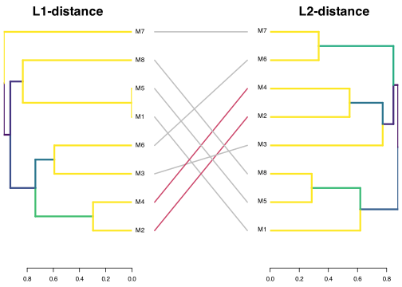
L12_dist_matrix <-
(( L1_between_model_dist_matrix +
L2_between_model_dist_matrix) / 2)
L12_hclust_models <-
hclust(
as.dist(L12_dist_matrix),
method = "average") This is probably the best one, as the L0 scales according to shared nodes, and the L1 and L2 are only computed on shared nodes.
L012_dist_matrix <-
((L0_between_model_dist_matrix +
L1_between_model_dist_matrix +
L2_between_model_dist_matrix) / 3)
L012_hclust_models <-
hclust(
as.dist(L012_dist_matrix),
method = "average") png("figures/FIG--CDAG-dendrogram.png",
width = 10, height = 3, units = "in", res = 300)
L012_hclust_models |>
as.dendrogram() |>
set("labels_col",
value = c("#009E73", "#0072B2", "#56B4E9", "#D55E00", "#CC79A7"),
k = 5) |>
set("branches_k_color",
value = c("#009E73", "#0072B2", "#56B4E9", "#D55E00", "#CC79A7"),
k = 5) |>
plot(axes = T, horiz = F)
dev.off()svg
2 # Displaying in R Markdown as well.
L012_hclust_models |>
as.dendrogram() |>
set("labels_col",
value = c("#009E73", "#0072B2", "#56B4E9", "#D55E00", "#CC79A7"),
k = 5) |>
set("branches_k_color",
value = c("#009E73", "#0072B2", "#56B4E9", "#D55E00", "#CC79A7"),
k = 5) |>
plot(axes = T, horiz = F) 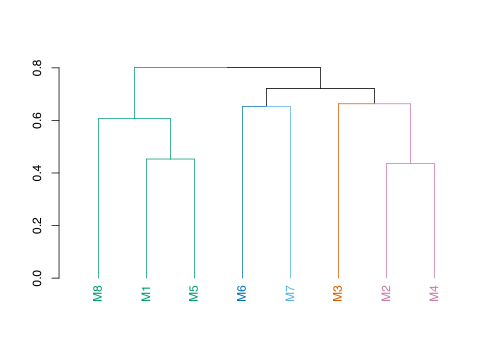
It seems that models M1, M3 and M6 are close to each other (GC1), as well as M2, M4 and M7 (GC2) and M5 and M8 (GC3).
# thought - merge on latent projection of shared nodes only?
ng_counts <-
all_node_groups_aggregated_metrics |>
count(node_group)
gcm_latent_projection_merge <- function(model_list, shared_nodes = NULL) {
# merges the latent projection of a list of models
# each model is projected onto the shared set of nodes,
# with the other nodes being treated as latent
if (is.null(shared_nodes)) {
shared_nodes <-
model_list |>
map(
\(m)
gcm_nodelist(m) |>
pull(name)
) |>
reduce(intersect)
}
merged_projections <-
model_list |>
map(
\(m)
gcm_latent_projection(m, latent_nodes =
setdiff(gcm_nodelist(m) |> pull(name),
shared_nodes)) |>
activate(edges) |>
mutate(edge_w = replace_na(edge_w, 1)) |>
activate(nodes)
) |>
reduce(gcm_merge) |>
activate(edges) |>
mutate(path_type = case_when(
str_detect(path_type, "confound") ~ "confound",
TRUE ~ "causal"
))
return(merged_projections)
}Looking at 3 clusters of causally similar models, and plotting a merging of their latent projections using their shared node group clusters.
plot_latent_clusters_merged <- function(indexes,
nl = NULL,
...) {
CDAG.projection <-
CDAGs_node_group[indexes] |>
gcm_latent_projection_merge(shared_nodes = nl)
CDAG.projection |>
g_plot_coarse(...) +
ggtitle(str_c(
"Merged latent projections of: ",
str_c("M", indexes, collapse = ", ")))
}
most_common_ngs <- all_node_groups_aggregated_metrics |>
count(node_group) |>
filter(n > 2) |>
pull(node_group)
M2436_col <- "#CC79A7"
M15_col <- "#D55E00"
M7_col <- "#009E73"
M8_col <- "#56B4E9"The latent projection of all models is relatively uninformative:
plot_latent_clusters_merged(1:8, label = T)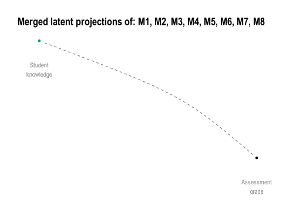
Assisted by the clustering there is a natural way to partition the models:
M7 ??
M8 ??
M2436
M15: Student motivation key confound between knowledge, metacognition, and assessment. Might need to add in misuse of AI
Those that had a greater focus on other kinds of help (M1, M3, M6)
Those that did examine the misuse of AI, and within those:
Key here is they did not examine misuse of AI.
node_counts_M136 <- gcm_nodelist(CDAGs_node_group$M1) |>
bind_rows(gcm_nodelist(CDAGs_node_group$M3)) |>
bind_rows(gcm_nodelist(CDAGs_node_group$M6)) |>
count(name, sort = T)
nl_m136 <- c(
# Common in all
"CD.Str", "Grade", "LD.Task", "S.Kn",
# In 2 and distinguishing this cluster from others
"T.Cp",
"S.Act",
"H.Gen",
"H.AI.good",
"H.AI.evil"
)
plot_latent_clusters_merged(
c(1,3,6), label = T,
# nl = node_counts_M136 |>
# filter(n > 1) |>
# pull(name))
nl = nl_m136)
p_cdag_c1 <- plot_latent_clusters_merged(
c(1,3,6), ,
nl = nl_m136) + ggtitle("") +
coord_equal()+
theme(panel.border = element_rect(colour = M136_col, fill = NA, linewidth = 1))
ggsave(
"figures/minifig--CDAG-clust-1.png",
plot = p_cdag_c1,
width = 4, height = 4,
units = "in")plot_latent_clusters_merged(c(2,3, 4,6), label = T)
p_cdag_gc2 <- plot_latent_clusters_merged(c(2,3, 4,6)) + ggtitle("")+
coord_equal() +
theme(panel.border = element_rect(colour = M247_col, fill = NA, linewidth = 1))
ggsave(
"figures/minifig--CDAG-clust-2.png",
plot = p_cdag_gc2,
width = 4, height = 4,
units = "in")# L12 cluster of cluster DAGs
# In cluster strength order
plot_latent_clusters_merged(c(5,8), label = T)
p_cdag_gc3 <- plot_latent_clusters_merged(c(5, 8)) + ggtitle("")+
coord_equal()+
theme(panel.border = element_rect(colour = M58_col, fill = NA, linewidth = 1))
ggsave(
"figures/minifig--CDAG-clust-3.png",
plot = p_cdag_gc3,
width = 4, height = 4,
units = "in")`# Simulation
Now we examine the feasibility of learning these models from data. A typical counter to going to the effort of eliciting these models from domain experts is that they can be learned from the data alone. However, we have seen here that much of the data is not present in the institutions ecosystem, with the nodes being deemed inherently latent (30.1%), potentially observable (46.3%), observable but not currently in the data (8.1%), or already measured and stored in the current data ecosystem (15.4%).
Examining at a coarser grained level by looking at the node group cluster graphs, we still see that a majority of node groups fall into difficult to measure categories:
node_groups_table |>
janitor::tabyl(measurability) |>
janitor::adorn_pct_formatting() |>
arrange(measurability) measurability n percent
Latent 6 30.0%
Likely latent 2 10.0%
Observable 3 15.0%
Potentially observable 8 40.0%
Likely observable 1 5.0%We design this experiment as follows. We ask the question can a causal graph discovered from available data generate similar answers to the problem of assuring assessment? This translates to getting an unbiased estimate of Student Knowledge on Grade. As such 3 of the models are excluded, lacking sufficient adjustment sets (2 models) or having broken student knowledge into multiple nodes (1 model). For the “potentially observable” nodes a single descendant node is added, so that \(N \rightarrow N_P\), a proxy measurement node that is not the exact node measured but whose value depends only on the potentially observable node and some additional noise. The set of proxy nodes for the potentially observable (\(PO\)) nodes we denote (\(\hat{PO}\)). Each of the 5 remaining GCMs, with their additional proxy measurement nodes, is used to generate a synthetic data set. We assuming each node has an equal linear effect on its descendants (\(\beta=0.4\)), generated using simulateSEM of the dagitty package in R. This treats all variables as continuous with mean 0 and variance 1.
sim_signal_strength <- list(
"idyllic" = 0.9,
"typical" = 0.4,
"noisy" = 0.1)
tibble(Scenario = names(sim_signal_strength),
Beta = as.numeric(sim_signal_strength)) |>
mutate(
`Variance due to each parent node` = Beta^2 / (1 + Beta^2)
) |>
knitr::kable(digits = 3)| Scenario | Beta | Variance due to each parent node |
|---|---|---|
| idyllic | 0.9 | 0.448 |
| typical | 0.4 | 0.138 |
| noisy | 0.1 | 0.010 |
We then apply a structure learning algorithm to each models simulated data in three phases: learning from the currently measured data only (only DW nodes), learning from all observable nodes (DW and O) nodes, and finally learning from all potentially available data (DW, O and \(\hat{PO}\)). This represents increasing levels of resourcing applied to learning the underlying causal structure, given the model.
Note we are working under a local assumption that each model is the ‘ground truth’, but fully acknowledge that we do not know for this system what the true model is. However, if the structure learning claims of application to discover latent nodes are to be believed (CITE) then we should see some reasonable convergence towards each locally true model.
# maybe use dagitty::simulateSEM() or dagitty::simulateLogistic()
# dagitty suggests using lavaan instead for SEM
# should add layout!!
# use same x, y from main graph
m_build_node_group_model_with_proxy_nodes <- function(
m = "M1",
x_p_nudge = 0, y_p_nudge = -2) {
model <- m
nodes_in_graphs <-
all_node_groups_aggregated_metrics |>
mutate(measurability = case_when(
# Simplifying for sim
node_group == "S.Kn" ~ "O", # For simming only
str_detect(measurability_node_group, "atent") ~ "L",
str_detect(measurability_node_group, "Potent") ~ "PO",
TRUE ~ "O",
)) |>
mutate(name = node_group) |>
inner_join(merged_coarse_layout |>
select(name, x, y),
by = "name") |>
filter(Model == toupper(m)) |>
select(name, x, y, node_group, node_type,
measurability)
proxy_nodes <-
nodes_in_graphs|>
filter(measurability == "PO") |>
select(name, node_type, x, y) |>
mutate(name = str_c(name, "_p"),
# Need to place proxy nodes close - might cause issues
x = x + x_p_nudge,
y = y + y_p_nudge
) |>
mutate(node_group = "Proxy") |>
mutate(measurability = "O") # the assumption for the proxy
nodes <- nodes_in_graphs |>
bind_rows( # adding proxy nodes for PO nodes
proxy_nodes
) |>
mutate(measurability = factor(
measurability,
levels = c("L", "PO", "O")))
edges <- CDAGs_node_group[[m]] |>
gcm_edgelist() |>
bind_rows(
tibble(
from = nodes |>
filter(measurability == "PO") |>
pull(name)) |>
mutate(to = str_c(from, "_p"))
)
new_tidydag <- tidygraph::tbl_graph(
nodes = nodes, edges = edges, directed = TRUE
)
new_dag <- dagitty_from_edge_df(edges)
# setting coordinates of dagitty object - needs to be a named list
node_names <- nodes$name
node_coord_list <- list(x = nodes$x, y = nodes$y)
names(node_coord_list$x) <- node_names
names(node_coord_list$y) <- node_names
coordinates(new_dag) <- node_coord_list
node_list_o <-
nodes |>
filter(measurability == "O") |>
filter(!str_detect(name, "_p")) |>
pull(name)
node_list_opo <- nodes |>
filter(measurability %in% c("DW", "O")) |>
pull(name)
return(list(
dag = new_dag, # new dag in dagitty format
tdag = new_tidydag, # new dag as tidydag
node_list_o = node_list_o, # list of observable nodes (excluding proxies)
node_list_opo = node_list_opo # list of all non-latent nodes
))
}
simSEM <- partial(simulateSEM, eps = 1, standardized = F, N = 1000)
# simSEM <- partial(simulateLogistic, eps = 1, N = 1000)
bn_fit_node_group_model_list <- function(
m_proxy_list, Beta = 0.4,
blacklist = tibble(
from = "Grade",
to = "S.Kn")) {
# getting simulated data, and subsets
d.sim.sem <- simSEM(m_proxy_list$dag, b.default = Beta)
d.o <- as.data.frame(d.sim.sem[,m_proxy_list$node_list_o])
d.opo <- as.data.frame(d.sim.sem[,m_proxy_list$node_list_opo])
# fitting BNets
bn.full = bnlearn::bn.fit(bnlearn::hc(d.sim.sem,
blacklist = blacklist), d.sim.sem)
bn.o = bnlearn::bn.fit(bnlearn::hc(d.o,
blacklist = blacklist), d.o)
bn.opo = bnlearn::bn.fit(bnlearn::hc(d.opo,
blacklist = blacklist), d.opo)
return( # returns a named list of simmed data and models
list(
# The full data set
d.full = d.sim.sem,
bn.full = bn.full,
# Only observable nodes
d.o = d.o,
bn.o = bn.o,
# Including Potentially Observable (PO), so ALL non-latent nodes
d.opo = d.opo,
bn.opo = bn.opo
))
}
bn_to_dagitty <- function(bn) {
edges <- bnlearn::arcs(bn) |> as_tibble()
all_nodes <- bnlearn::nodes(bn)
edge_str <- if (nrow(edges) > 0)
str_c(edges$from, " -> ", edges$to, collapse = "; ") else ""
dagitty(str_c("dag{ ",
str_c(all_nodes, collapse = "; "),
if (nchar(edge_str)) str_c("; ", edge_str) else "",
" }"))
}
# Thinking of a simple dag X -> Y, we have
# Var(Y) = b^2 * Var(X) + Var(eps) -- eps is the noise, and here it is set to 1 by default
# then Var(Y) = b^2 + 1
# Since the R^2 is the ratio of the variance explained by X:
# R^2 = Var(explained) / Var(total)
# R^2 = b^2 / (b^2 + 1)
dagitty_to_bn <- function(dag) {
edges <- dagitty::edges(dag) |>
as_tibble() |>
filter(e == "->") |> # directed edges only, excludes bidirected
select(v, w) |>
rename(from = v, to = w)
nodes <- unique(c(edges$from, edges$to))
# Build empty network then set arcs
net <- bnlearn::empty.graph(nodes)
bnlearn::arcs(net) <- as.matrix(edges)
net
}
causal_estimate_over_all_adj_sets <- function(
dag, data, latent_nodes = NULL,
exposure = "S.Kn", outcome = "Grade",
x1_val = 1, x0_val = 0) {
# This estimates P(Grade|S.Kn, Adjustment Set) over all adjustment sets
# This will give a range of that the model suggests is the true effect
adj_sets <- adjustmentSets(dag, exposure = exposure, outcome = outcome,
type = "all")
if (!is.null(latent_nodes)) {
# remove any with latent nodes
adj_sets <- keep(adj_sets, \(x) !any(x %in% latent_nodes))
}
# Throw error if none!
estimate_per_set <- map(adj_sets, function(adj_set) {
if (length(adj_set) == 0) {
message("No adjustment sets found")
formula_str <- str_c(outcome, " ~ ", exposure)
} else {
formula_str <- str_c(outcome, " ~ ", exposure, " + ",
str_c(adj_set, collapse = " + "))
}
if (class(data[[1]]) == "factor") {
fit <- glm(as.formula(formula_str), data = data, family = binomial)
x1_data <- data |>
mutate({{exposure}} := factor(x1_val, levels = c(-1,1)))
x0_data <- data |>
mutate({{exposure}} := factor(x0_val, levels = c(-1,1)))
} else {
fit <- lm(as.formula(formula_str), data = data)
x1_data <- data |>
mutate({{exposure}} := x1_val)
x0_data <- data |>
mutate({{exposure}} := x0_val)
}
# Simulating for potential outcomes
y1_x1 <- predict(fit,
newdata = x1_data,
se.fit = TRUE)
y1_x0 <- predict(fit,
newdata = x0_data,
se.fit = TRUE)
preds.fit <- y1_x1$fit - y1_x0$fit
se1 <- sqrt(mean(y1_x1$se.fit^2))
se0 <- sqrt(mean(y1_x0$se.fit^2))
se <- max(se1, se0)
list(
y1_x0 = y1_x0,
y1_x1 = y1_x1,
mean = mean(preds.fit),
se = se
)
}
)
estimates <- map_dbl(estimate_per_set, "mean")
std_errors <- map_dbl(estimate_per_set, "se")
return(list(adjustment_set = adj_sets,
estimate = estimates,
std_error = std_errors))
}
generate_node_group_causal_estimate_comparisons <- function(
Model = "M1",
Beta = 0.4, # strength of signal along paths
# might need to change for different models depending on present nodes
exposure = "S.Kn", outcome = "Grade",
x1_val = 1, x0_val = 0, # should be 1 and 0 for continuous
# for placiing proxy nodes
x_p_nudge = 0, y_p_nudge = -2
) {
ground_truth_dag <-
CDAGs_node_group[[Model]] |>
tidy_graph_to_dag()
model_list <-
m_build_node_group_model_with_proxy_nodes(
m = Model,
x_p_nudge = x_p_nudge,
y_p_nudge = y_p_nudge)
bn_list <- bn_fit_node_group_model_list(model_list, Beta = Beta)
# Ground truth uses full simmed data
est <- partial(causal_estimate_over_all_adj_sets,
exposure = exposure, outcome = outcome,
x1_val = x1_val, x0_val = x0_val)
ground_truth <- est(dag = ground_truth_dag, data = bn_list$d.full)
expert_dag <- est(
dag = ground_truth_dag,
data = bn_list$d.full,
latent_nodes =
all_node_groups_aggregated_metrics |>
filter(Model == Model,
str_detect(measurability_node_group, "atent")) |>
pull(node_group))
can_estimate_o <-
(exposure %in% model_list$node_list_o) & (outcome %in% model_list$node_list_o)
can_estimate_opo <-
(exposure %in% model_list$node_list_opo) & (outcome %in% model_list$node_list_opo)
if (can_estimate_o) {
est.o <- est(
dag = bn_to_dagitty(bn_list$bn.o) ,
data = bn_list$d.o)
} else {
est.o <- list("adjustment_set" = NA, "estimate" = NA)
message("Nodes not found in Observable node list")
}
if (can_estimate_opo) {
est.opo <- est(
dag = bn_to_dagitty(bn_list$bn.opo) ,
data = bn_list$d.opo)
} else {
est.opo <- list("adjustment_set" = NA, "estimate" = NA)
message("Nodes not found in Potentially Observable node list")
}
estimates <- tibble(
Model = Model,
DAG = c(
"Ground Truth",
"Expert DAG",
"Observable",
"Potentially Observable") |>
factor(levels = c(
"Ground Truth",
"Expert DAG",
"Observable",
"Potentially Observable")),
exposure = exposure,
outcome = outcome,
adjustment_sets = list(
ground_truth$adjustment_set,
expert_dag$adjustment_set,
est.o$adjustment_set,
est.opo$adjustment_set
),
estimate_mean = c(
mean(ground_truth$estimate),
mean(expert_dag$estimate),
mean(est.o$estimate),
mean(est.opo$estimate)
),
estimate_std_errors = c(
mean(ground_truth$std_error),
mean(expert_dag$std_error),
mean(est.o$std_error),
mean(est.opo$std_error)
),
estimate_sd = c(
sd(ground_truth$estimate),
sd(expert_dag$estimate),
sd(est.o$estimate),
sd(est.opo$estimate)
)
)
return( # Monster list of everything we need
list(
Model = Model,
DAG = ground_truth_dag,
augmented_DAGs = model_list,
fitted_BN = bn_list,
estimates = estimates
)
)
}if (rerun_simulations) {
simulations_ng_cluster_models <-
c("M1", "M2", "M3", "M4", "M5", "M6", "M7", "M8") |>
set_names() |>
imap(
\(M, n)
generate_node_group_causal_estimate_comparisons(
Model = M,
Beta = sim_signal_strength[["typical"]]
)
)
saveRDS(simulations_ng_cluster_models, "cache/model_simulations.RDS")
} else {
simulations_ng_cluster_models <- readRDS("cache/model_simulations.RDS")
}all_ng_estimates <-
map(
simulations_ng_cluster_models,
\(s)
s$estimates
) |>
list_rbind() |>
group_by(Model) |>
mutate(
gt_est_diff = estimate_mean - estimate_mean[DAG == "Ground Truth"] )|>
ungroup() |>
mutate(error = estimate_std_errors + replace_na(estimate_sd, 0)) |>
select(Model, DAG, estimate_mean, error, gt_est_diff, everything())Between Ground Truth, Expert DAGs, and Learned DAGs from observable data.
dodge_amt <- 0.1
ground_truth_estimate_mean_estimate <-
all_ng_estimates |>
filter(DAG == "Ground Truth") |>
filter(!is.nan(estimate_mean)) |>
pull(estimate_mean) |>
mean()
ground_truth_error_estimate <-
( # the largest base error
all_ng_estimates |>
filter(DAG == "Ground Truth") |>
filter(!is.nan(error)) |>
pull(error) |>
max())
# ) + ( # as well as the difference in ground truth estimates
# all_ng_estimates |>
# filter(DAG == "Ground Truth") |>
# filter(!is.nan(estimate_mean)) |>
# pull(estimate_mean) |>
# range() |>
# diff()
# )
est_to_plot <-
all_ng_estimates |>
mutate(estimated_ground_truth = is.nan(estimate_mean)) |>
mutate(
estimate_mean = if_else(is.nan(estimate_mean) & DAG == "Ground Truth",
ground_truth_estimate_mean_estimate,
estimate_mean),
error = if_else(is.nan(error) & DAG == "Ground Truth",
ground_truth_error_estimate,
error)
) |>
group_by(Model) |>
mutate(
gt_est_diff = if_else(
is.nan(gt_est_diff),
estimate_mean - estimate_mean[DAG == "Ground Truth"],
gt_est_diff
)
) |>
ungroup() |>
mutate(ogDAG = DAG) |>
mutate(DAG = if_else(estimated_ground_truth & DAG == "Ground Truth",
"Ground Truth (est)",
DAG) |>
factor(levels = c(
"Ground Truth",
"Ground Truth (est)",
"Expert DAG",
"Observable",
"Potentially Observable"
)))
pal_cols <- palette.colors()
pal_cols <- c(pal_cols[1], "#777777", pal_cols[2], pal_cols[3])# Would be nice to replicate this, but group
# models into those identifiable and those not
# Maybe change this to abs effect?
est_to_plot |>
filter(DAG != "Observable") |>
mutate(DAG = if_else(DAG == "Potentially Observable", "Learned DAG",
DAG) |>
factor(levels = c(
"Ground Truth",
"Ground Truth (est)",
"Expert DAG",
"Learned DAG"
))) |>
mutate(
y_pos = as.numeric(factor(Model)) +
(as.numeric(factor(ogDAG)) - mean(as.numeric(factor(ogDAG)))) * dodge_amt
) |>
ggplot(aes(color = DAG, y = y_pos)) +
# geom_pointinterval(
# aes(x = gt_est_diff,
# xmin = gt_est_diff - 2 * error,
# xmax = gt_est_diff + 2 * error),
# alpha = 0.3, size = 1
# ) +
geom_pointinterval(
aes(x = estimate_mean,
xmin = estimate_mean - 1 *error,
xmax = estimate_mean + 1 *error),
alpha = 0.8, size = 3
) +
scale_y_continuous(
breaks = seq_along(levels(factor(est_to_plot$Model))),
labels = levels(factor(est_to_plot$Model)),
name = "Model"
) +
annotate("label", x = -0.0, y = c(2.2,3.2,5.2,6.2,8.2), label = "?",
color = pal_cols[3], alpha = 0.4) +
scale_colour_discrete(palette = pal_cols) +
xlab("Estimate") +
theme_minimal()
est_to_plot_grouped <-
est_to_plot |>
filter(DAG %in% c(
"Potentially Observable",
"Ground Truth",
"Expert DAG")) |>
mutate(DAG = if_else(DAG == "Potentially Observable", "Learned DAG",
DAG) |>
factor(levels = c(
"Ground Truth",
"Expert DAG",
"Learned DAG"
))) |>
group_by(Model) |>
mutate(model_group = if_else(
is.nan(estimate_mean[DAG == "Expert DAG"]),
"Non-identifiable",
"Identifiable"
)) |>
ungroup() |>
group_by(model_group) |>
mutate(model_group_list = str_c(
unique(model_group),
" models\n(from observable data):\n",
str_c(unique(sort(Model)) , collapse = ", "))) |>
ungroup() |>
mutate(
y_pos = as.numeric(factor(model_group_list)) +
(as.numeric(factor(ogDAG)) - mean(as.numeric(factor(ogDAG)))) * dodge_amt
)
est_to_plot_grouped |>
ggplot(aes(color = DAG, y = y_pos)) +
geom_pointinterval(
aes(x = gt_est_diff,
xmin = gt_est_diff - 1 *error,
xmax = gt_est_diff + 1 *error),
alpha = 0.6, size = 5
) +
scale_y_continuous(
breaks = seq_along(levels(factor(est_to_plot_grouped$model_group_list))),
labels = levels(factor(est_to_plot_grouped$model_group_list)),
name = "Model estimates by identifiability"
) +
annotate("label", x = -0.0, y = c(2), label = "?",
color = pal_cols[3], alpha = 0.4) +
scale_colour_discrete(palette = palette.colors()) +
xlab("Deviation from ground truth estimate") +
theme_minimal() +
theme(legend.position = "bottom")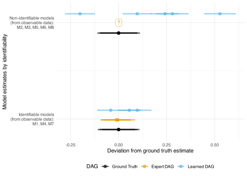
plot_bnlearn_coarse_comparison <- function(s_estimates) {
p_orig <- s_estimates$DAG |>
dag_to_tidy_graph() %N>%
mutate(name = str_remove(name, "_p$")) |>
gcm_cluster_graph(code_node_group) |>
g_plot_coarse()
x_limits <- layer_scales(p_orig)$x$get_limits()
y_limits <- layer_scales(p_orig)$y$get_limits()
p_opo <- s_estimates$fitted_BN$bn.opo |>
bn_to_dagitty() |>
dag_to_tidy_graph() %N>%
mutate(name = str_remove(name, "_p$")) |>
gcm_cluster_graph(code_node_group) |>
g_plot_coarse() +
xlim(x_limits) +
ylim(y_limits)
p_o <- s_estimates$fitted_BN$bn.o |>
bn_to_dagitty() |>
dag_to_tidy_graph() %N>%
mutate(name = str_remove(name, "_p$")) |>
gcm_cluster_graph(code_node_group) |>
g_plot_coarse() +
xlim(x_limits) +
ylim(y_limits)
return(list(
p_orig = p_orig,
p_opo = p_opo,
p_o = p_o))
}
pcomp_m1 <- plot_bnlearn_coarse_comparison(s_estimates = simulations_ng_cluster_models$M1)
pcomp_m1$p_orig / pcomp_m1$p_o +
ggtitle("Model 1: Actual coarsened DAG (top)
vs coarsened learned DAG from observable nodes")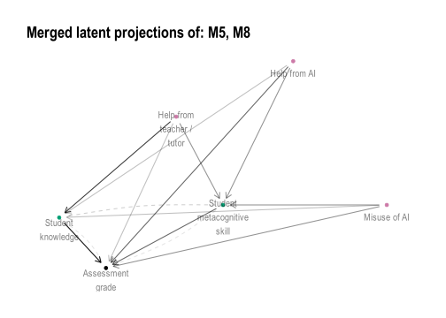
pcomp_m2 <- plot_bnlearn_coarse_comparison(s_estimates = simulations_ng_cluster_models$M2)
pcomp_m2$p_orig / pcomp_m2$p_o +
ggtitle("Model 2: Actual coarsened DAG (top)
vs coarsened learned DAG from observable nodes")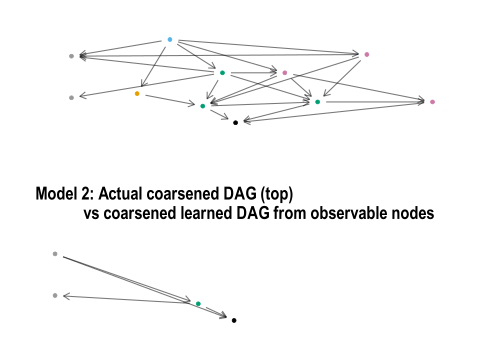
pcomp_m3 <- plot_bnlearn_coarse_comparison(s_estimates = simulations_ng_cluster_models$M3)
pcomp_m3$p_orig / pcomp_m3$p_o +
ggtitle("Model 3: Actual coarsened DAG (top)
vs coarsened learned DAG from observable nodes")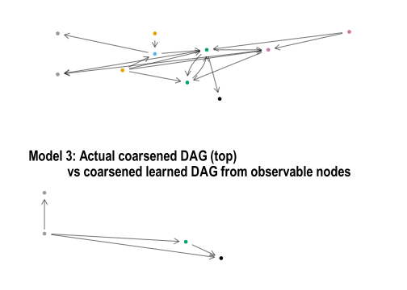
pcomp_m4 <- plot_bnlearn_coarse_comparison(s_estimates = simulations_ng_cluster_models$M4)
pcomp_m4$p_orig / pcomp_m4$p_o +
ggtitle("Model 4: Actual coarsened DAG (top)
vs coarsened learned DAG from observable nodes")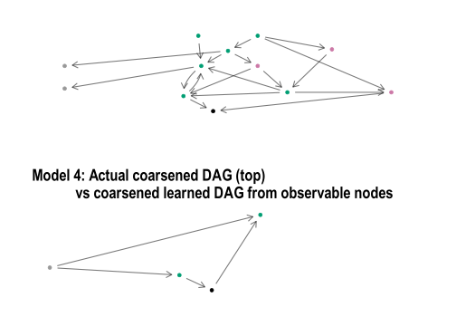
pcomp_m5 <- plot_bnlearn_coarse_comparison(
s_estimates = simulations_ng_cluster_models$M5)
pcomp_m5$p_orig / pcomp_m5$p_o +
ggtitle("Model 5: Actual coarsened DAG (top)
vs coarsened learned DAG from observable nodes")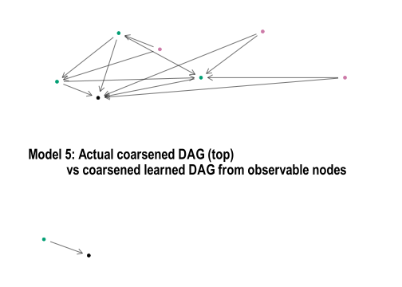
pcomp_m6 <- plot_bnlearn_coarse_comparison(
s_estimates = simulations_ng_cluster_models$M6)
pcomp_m6$p_orig / pcomp_m6$p_o +
ggtitle("Model 6: Actual coarsened DAG (top)
vs coarsened learned DAG from observable nodes")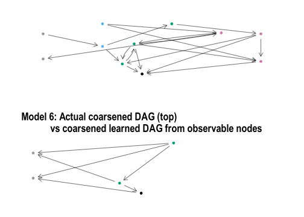
pcomp_m7 <- plot_bnlearn_coarse_comparison(
s_estimates = simulations_ng_cluster_models$M7)
pcomp_m7$p_orig / pcomp_m7$p_o +
ggtitle("Model 7: Actual coarsened DAG (top)
vs coarsened learned DAG from observable nodes")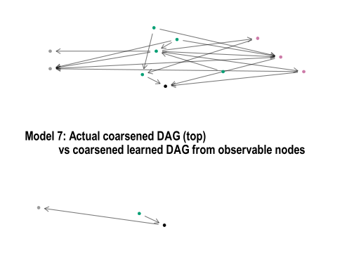
pcomp_m8 <- plot_bnlearn_coarse_comparison(
s_estimates = simulations_ng_cluster_models$M8)
pcomp_m8$p_orig / pcomp_m8$p_o +
ggtitle("Model 8: Actual coarsened DAG (top)
vs coarsened learned DAG from observable nodes")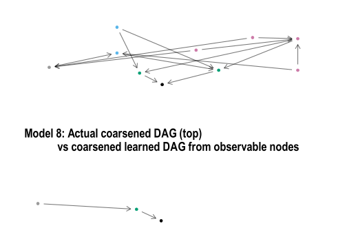
learned_CDAGs <-
simulations_ng_cluster_models |>
set_names(nm = str_replace(names(simulations_ng_cluster_models), "M", "D")) |>
imap(
\(est,m)
est$fitted_BN$bn.opo |>
bn_to_dagitty() |>
dagitty_to_tidygraph() |>
activate(nodes) |>
mutate(name = str_remove(name, "_p$"))
)
all_CDAGs <-
c(CDAGs_node_group, learned_CDAGs)if (recalculate_distance_matrices) {
all_L0_dist_matrix <-
compute_dist_matrix(all_CDAGs, L0_dist, symmetric = TRUE)
saveRDS(all_L0_dist_matrix, "cache/all_L0_dist_matrix.RDS")
} else {
all_L0_dist_matrix <- readRDS("cache/all_L0_dist_matrix.RDS")
}if (recalculate_distance_matrices) {
# Dist matrix
all_L1_dist_matrix <-
compute_dist_matrix(
all_CDAGs,
.df = L1_dist)
saveRDS(all_L1_dist_matrix,
"cache/all_L1_dist_matrix.RDS")
} else {
all_L1_dist_matrix <- readRDS("cache/all_L1_dist_matrix.RDS")
}Replicate the above, but between the ground truth and the learned DAG.
# L2 distance between two models
if (recalculate_distance_matrices) {
# Dist matrix
all_L2_dist_matrix <-
compute_dist_matrix(
all_CDAGs,
L2_dist,
symmetric = TRUE)
saveRDS(all_L2_dist_matrix,
"cache/all_L2_dist_matrix.RDS")
} else {
all_L2_dist_matrix <- readRDS("cache/all_L2_dist_matrix.RDS")
}library(viridis)
L1_hclust_all <- hclust(as.dist(all_L1_dist_matrix),
method = "average")
L2_hclust_all <- hclust(as.dist(all_L2_dist_matrix),
method = "average")
dend_L12_all <- dendlist(
L1_hclust_all |> as.dendrogram() |> highlight_branches_col(rev(mako(100))[5:100]),
L2_hclust_all |> as.dendrogram() |> highlight_branches_col(rev(magma(100))[9:100])
)
tanglegram(dend_L12_all, main_left = "L1-consistency", main_right = "L2-consistency",
sort = TRUE, edge.lwd = 3, lwd = 2,
common_subtrees_color_lines = TRUE,
highlight_distinct_edges = FALSE)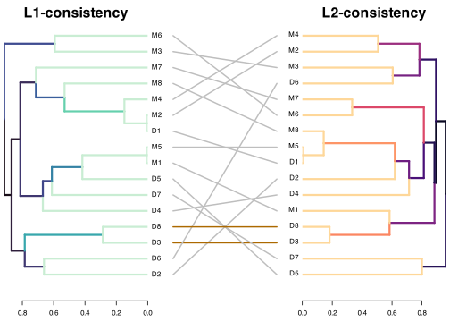
# imputed_L1 <- all_L1_dist_matrix |>
# matrix_fill_NAs_with_colmean()
# imputed_L2 <- all_L2_dist_matrix |>
# matrix_fill_NAs_with_colmean()
all_L012_dist_matrix <-
(all_L0_dist_matrix + all_L1_dist_matrix + all_L2_dist_matrix) / 3
# all_L012_dist_matrix <-
# (imputed_L1 + imputed_L2) / 2
# M136
# M247
# M58
idsM2436 <- c(2,4,3,6,10,12,11,14)
idsM136 <- c(1,3,6,9,11,14)
idsM58 <- c(5,8,13,16)
L012_D_matrix_M2436 <-
all_L012_dist_matrix[idsM2436, idsM2436]
L012_hclust_full <- hclust(
as.dist(all_L012_dist_matrix),
method = "average"
)
# Splitting first into similar model groups
L012_hclust_M2436 <-
hclust(as.dist(L012_D_matrix_M2436),
method = "average")dend <-
L012_hclust_full |>
as.dendrogram()
lab <- labels(dend)
is_M <- substr(lab, 1, 1) == "M"
is_D <- substr(lab, 1, 1) == "D"
dend <- set(dend, "by_labels_branches_lty",
value = lab[is_D], TF_values = c(2, 1))
leaf_cols <- c(
"#000000", "#E69F00", "#56B4E9", "#009E73", "#0072B2", "#D55E00", "#CC79A7", "#999999","#F0E442")
num <- as.integer(sub("^\\D+", "", lab))
pal <- setNames(leaf_cols, 1:8)
labels_colors(dend) <- pal[as.character(num)]
dend |>
hang.dendrogram(hang = 0.1) |>
plot(axes = F, horiz = F) 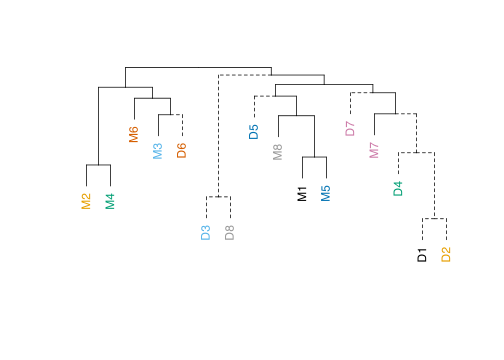
dend2 <-
L012_hclust_M2436 |>
as.dendrogram()
lab <- labels(dend2)
is_M <- substr(lab, 1, 1) == "M"
is_D <- substr(lab, 1, 1) == "D"
dend2 <- set(dend2, "by_labels_branches_lty",
value = lab[is_D], TF_values = c(2, 1))
leaf_cols <- c(
"#000000", "#E69F00", "#56B4E9", "#009E73", "#0072B2", "#D55E00", "#CC79A7", "#999999","#F0E442")
num <- as.integer(sub("^\\D+", "", lab))
pal <- setNames(leaf_cols, 1:8)
labels_colors(dend2) <- pal[as.character(num)]
dend2 |>
hang.dendrogram(hang = 0.1) |>
plot(axes = F, horiz = F) 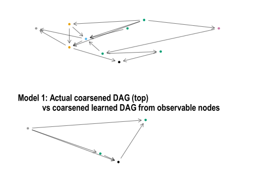
When do the data derived models get separated from their model?
To look at between distances we examine:
# would be nice to have the D's terminate at the height they leave the cluster of their corresponding model
dend_main <-
L012_hclust_full |>
as.dendrogram() |>
set("by_labels_branches_lty",
value = lab[is_D], TF_values = c(2,1))
dend_M2436 <- L012_hclust_M2436 |>
as.dendrogram() |>
set("by_labels_branches_lty",
value = lab[is_D], TF_values = c(2,1)) labels <- c(paste0("M", 1:8), paste0("D", 1:8))
nums <- as.integer(gsub("\\D", "", labels))
d_mat <- outer(nums, nums, function(a, b) as.numeric(a != b))
dimnames(d_mat) <- list(labels, labels)
d_pair <- as.dist(d_mat)
L_hclust_perfect_learn <- hclust(d_pair ,method = "complete")
dend_perfect <- L_hclust_perfect_learn |>
as.dendrogram()
labp <- labels(dend_perfect)
nump <- as.integer(sub("^\\D+", "", labp))
palp <- setNames(leaf_cols, 1:8)
labels_colors(dend_perfect) <- palp[as.character(nump)]
L_hclust_perfect_learn_M2436 <- hclust(
as.dist(
d_mat[idsM2436,
idsM2436]),
method = "complete")
tanglegram(dend1 = dend_perfect,
dend2 = dend,
main_left = "Target learning", main_right = "L-Consistency",
sort = TRUE, edge.lwd = 2, lwd = 2,
common_subtrees_color_lines = TRUE,
highlight_distinct_edges = F,
axes = F,
rank_branches = F
)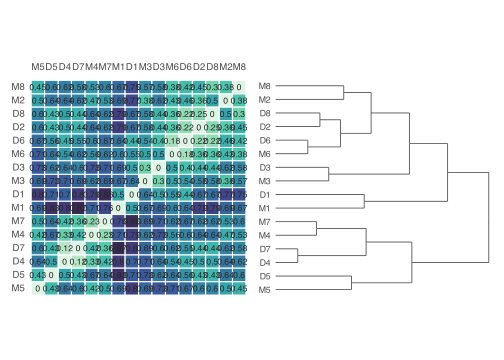
Tanglegrams of each CDAG grouping
tanglegram(dend1 = as.dendrogram(L_hclust_perfect_learn_M2436),
dend2 = dend_M2436,
main_left = "Target learning", main_right = "L-Consistency",
sort = TRUE, edge.lwd = 3, lwd = 2,
common_subtrees_color_lines = TRUE,
highlight_distinct_edges = F)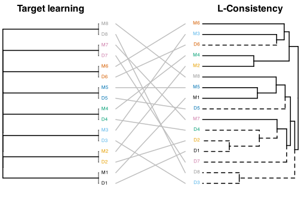
CDAG_main_cluster_between_models_dist <- L12_D_matrix_main_cluster[1:4,1:4][
upper.tri(matrix(nrow = 4, ncol = 4)) |
lower.tri(matrix(nrow = 4, ncol = 4))]
CDAG_metacog_cluster_between_models_dist <-
L12_D_matrix_metacog_cluster[1:2,1:2][
upper.tri(matrix(nrow = 2, ncol = 2)) |
lower.tri(matrix(nrow = 2, ncol = 2))
]
CDAG_noMisuse_cluster_between_models_dist <-
L12_D_matrix_noMisuse_cluster[1:2,1:2][
upper.tri(matrix(nrow = 2, ncol = 2)) |
lower.tri(matrix(nrow = 2, ncol = 2))
]
CDAG_main_cluster_model_to_learn_dist <-
L12_D_matrix_main_cluster[1:4,5:8] |> diag()
CDAG_metacog_cluster_model_to_learn_dist <-
L12_D_matrix_metacog_cluster[1:2,3:4] |> diag()
CDAG_noMisuse_cluster_model_to_learn_dist <-
L12_D_matrix_noMisuse_cluster[1:2,3:4] |> diag()
df.dbetween <-
bind_rows(
tibble(compare = "between expert models within cluster",
LD = c(CDAG_main_cluster_between_models_dist,
CDAG_noMisuse_cluster_between_models_dist,
CDAG_metacog_cluster_between_models_dist)),
tibble(compare = "pairwise between learned and intended model",
LD = c(CDAG_main_cluster_model_to_learn_dist,
CDAG_metacog_cluster_model_to_learn_dist,
CDAG_noMisuse_cluster_model_to_learn_dist)))
df.dbetween |>
ggplot(aes(x = LD, fill = compare, y = compare)) +
ggdist::stat_dist_slabinterval() +
theme_minimal() +
scale_fill_discrete(palette = palette.colors()[2:3], guide = "none")
df.dbetween |>
group_by(compare) |>
summarise(
mean_dist = mean(LD),
sd_dist = sd(LD)
)Highlighting all models in turn, original graph first and then CDAG.
if (export_and_save_every_model) {
p_fine_show_and_save(1)
p_coarse_show_and_save(1)
p_fine_show_and_save(2)
p_coarse_show_and_save(2)
p_fine_show_and_save(3)
p_coarse_show_and_save(3)
p_fine_show_and_save(4)
p_coarse_show_and_save(4)
p_fine_show_and_save(5)
p_coarse_show_and_save(5)
p_fine_show_and_save(6)
p_coarse_show_and_save(6)
p_fine_show_and_save(7)
p_coarse_show_and_save(7)
p_fine_show_and_save(8)
p_coarse_show_and_save(8)
} else {
print("Models saved in 'figures' folder, names beginning with 'plt--'")
}[1] "Models saved in 'figures' folder, names beginning with 'plt--'"https://arxiv.org/pdf/2201.06981 - follow up this paper On the Equivalence of Causal Models: A Category-Theoretic Approach Jun Otsuka JOTSUKA@BUN.KYOTO-U.AC.JP Philosophy Dept., Kyoto University, Kyoto, Japan. Hayato Saigo HARMONIAHAYATO@GMAIL.COM Dept. of Bioscience, Nagahama Institute of Bio-Science and Technology, Shiga, Japan.
Or from an earlier paper: > [DAG based] causal reasoning relies crucially on a delicate interplay between syntax and semantics, which is often not made explicit in the literature. The syntactic object of interest is the causal structure (e.g. a causal graph), which captures something about our understanding of the world, and the mechanisms which gave rise to some observed phenomena. The semantic object of interest is the data: joint and conditional probability distributions on some variables. Fixing a causal structure entails certain constraints on which probability distributions can arise, hence it is natural to see distributions satisfying those constraints as models of the syntax.
What if the semantic object is the expert?
There seems to be a good case for using string diagrams after the initial run of GCMing with domain experts. They are an incremental step in the formalisation process and have other affordances as well.
Is it possible that graph merging, coarsening, or L_i distance metrics are simpler in causal string diagrams than they are in causal DAGs?
Note - probably good to review the notation used in https://arxiv.org/pdf/2207.08603 - Zenarro’s review of causal abstractions, and also in - https://arxiv.org/pdf/2301.04709 - which has a nice table at the front. Maybe check Dawid’s paper for a clearer notation on interventions: https://arxiv.org/pdf/2402.09429. One thing that Dawid does is distinguish syntactic terms by bold-face and interpretation terms about causality in teletype.
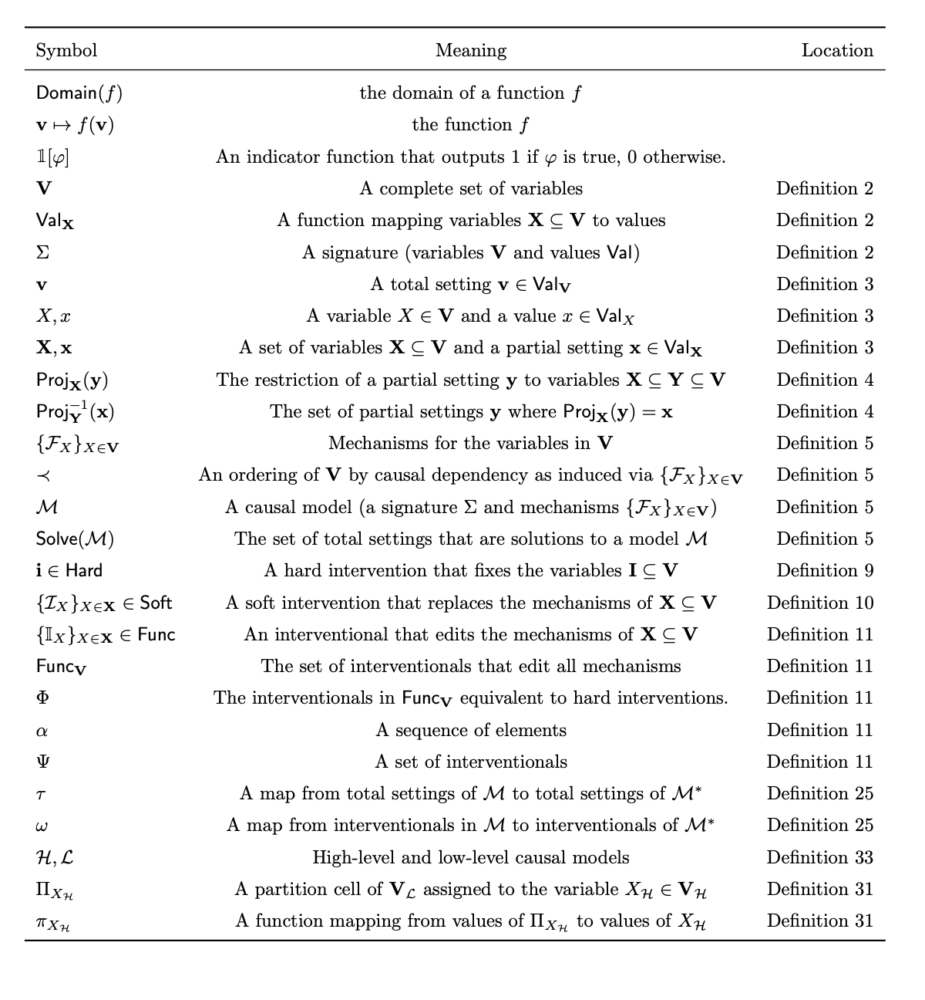